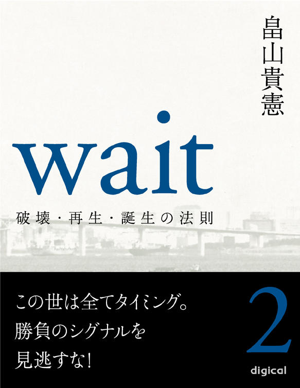
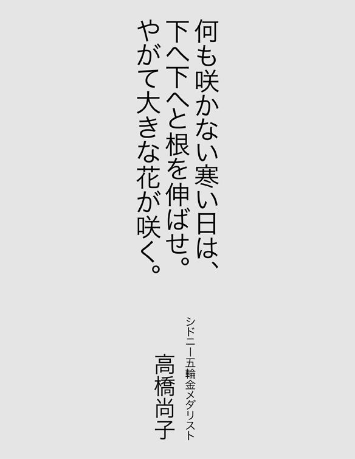

| Wait 〜破壊・再生・誕生の法則〜 第二巻 (【impress QuickBooks】) | |
| 畠山貴憲 | |
| (2012) | |


【プロフィール】
畠山 貴憲（はたけやま たかのり）
一九七〇年東京都生まれ。一九九七年劇団『ＡＴＡＣ』の座長になり、二〇〇二年劇団名を『ＴＨＥＡＴＥＲ ＪＵＮＫ』と改める。二〇〇三年『永遠の一秒』が、萬スタジオバックアップシリーズで最優秀審査員賞を受賞。翌年上演の『海を越えた挑戦者たち』はＦＭ沖縄制作のラジオドラマに選出される。その後、フリーになり、二〇〇九年小説『ｗａｉｔ』が、第十六回松本清張賞の予選を通過。四一〇編の中の三三編に選ばれる。来年、小説「（仮）バンミカセ！～海を越えた挑戦者たち～」が琉球新報社より出版予定。同作品は現在、映画化として進行中。
『事を成す人は、必ず時の来るを待つ。焦らず慌てず、静かに時の来るを待つ』
この言葉は、パナソニック（旧松下電器）の創業者、松下幸之助氏の名言です。
『何も咲かない寒い日は、下へ下へと根を伸ばせ。やがて大きな花が咲く』
これは、元女子マラソン、シドニー五輪金メダリスト、高橋尚子選手の座右の銘。
何れも、本作品中に登場する言葉です。
今からちょうど五年前、私は十年間座長を務めた劇団を断腸の思いで閉じました。そして、それからすぐに睡眠障害を患ってしまい、日に日に体力が奪われていきました。まさに負のスパイラル。加速度をつけながら、私の身体が悲鳴を上げます。
まず耳が聞こえなくなり、しばらくして、今度は高熱が一週間ほど続いたと思ったら、突然、顔の右側半分が動かなくなりました。
顔面神経麻痺──
私の細胞一つ一つが破壊されていくような気がしました。
苦
悶
、煩
悶
の日々が続きました。
もう限界でした。
そんなある日、雨に霞む海岸通りを眺めていたら、遠くにぼんやりと明かりが見えたのです。すぐにガソリンスタンドの明かりだと気付いたのですが、私はその明かりがなぜかしら『自分の進む道しるべ』のような気がしてなりませんでした。
本作品の構想が降ってきた瞬間です。
ちょうど、そんな時でした。先ほどの言葉（松下幸之助氏と高橋尚子選手の言葉）に出会ったのは。
『事を成す人は、必ず時の来るを待つ。焦らず慌てず、静かに時の来るを待つ』
『何も咲かない寒い日は、下へ下へと根を伸ばせ。やがて大きな花が咲く』
それから私は、耳が聞こえなくても顔が動かなくても出来ること......そう、本を書き始めたのです。
自分の過去を、主人公、志村洋介にトレースしました。もちろん、洋介ほど私は格好良くありませんが、この主人公は見事、私の過去を受け入れてくれました。
そして半年の時間を要し、ようやく書き上げました。私の小説処女作『ｗａｉｔ』を。
本作『ｗａｉｔ』は、あくまで自分の過去をモデルにしたフィクションですが、私はこの作品を書き上げて、一つだけ気付いたことがあります。それは、これまで私の歩んできた人生が、実は自分好みの物語だったということ。つまり、自分好みの物語のような人生を、私はこれまで歩んできたというわけです。
人生とはとかく、そういったものなのかもしれません。
読者の皆さんも、一度、この機会に自分の人生を振り返ってみて下さい。望むと望まないに関わらず、実はそれが自分好みの物語だったことに気付くかもしれませんよ。
最後に蛇足ですが、そんな私の物語は、数ヵ月後、松本清張賞の予選を通過しました。
人生には必ず物語がある。そしてそれは、往々にして自分好みの物語になる。
畠山貴憲
【登場人物】
○志村洋介 劇団『ｗａｉｔ』座長。劇作家。演出家。俳優。
○西村恭子 女優。
○高田直哉 俳優。フリーター。
○東野美穂 女優。フリーター。
○松原守 俳優。フリーター。
○鳥海研二 俳優。フリーター。
○西村翔太 恭子の弟。
○大原社長 大原プロの社長。
○勝田信夫 舞台監督。洋介の師匠的存在。
○美川俊二 俳優。フリーター。
○中込ゆり 日南放送社員。
○大沼育子 日南放送報道部副部長。
○三島友則 福岡県のとある会館の職員。
○橋本昌美 宮崎県小林市のとある会館の館長。
○仲間 聡 沖縄県在住の洋介の知人。
○新垣正弘 沖縄県那覇市議の秘書。
○高嶺 徹 琉球タイムス社文化事業局事業部部長。
○川岸正平 劇団『ｗａｉｔ』制作。
○川本新之助 宮崎県のとある会館の館長。
○長森健一 宮崎のとある劇団の座長。
○君島 恵 女優。タレント。
○安岡邦子 戦争当時、特攻隊を見送った生き証人。
○野上理恵 女優。フリーター。
○小峰修一 プロデューサー。
○真柴健吾 映画監督。
○添田 久 出版社編集員。
○山田憲明 舞台照明。
ｗａｉｔ ～破壊・再生・誕生の法則～
第二巻 この世は全てタイミング。勝負のシグナルを見逃すな！
第一巻 やらざるを得ない状況は人生のターニングポイント。能書きを言う前に行動しろ！
１ 天王洲のカフェ
一 始動
２ 止まない雨
二 代表作
３ 海岸通り
三 背徳の瞳
４ 道
四 一人旅にて
第三巻 破壊を恐れない。破壊なくして新居は建たない
８ 回顧
九 夏の終わり
９ その先へ
十 二つの影
10
青海南ふ頭公園
十一 破壊と再生
11 誕生
５
流れの中で
突然、閃光が走ったと思ったらその後をけたたましい雷鳴が続き、激しい雷雨となった。ジーンズの裾が、あっという間にビショビショに濡れていく。これが今まで洋介が歩んできた道なのかもしれない。いや、これからもきっとそうだろう。雨が降っていたと思ったら、突然止んで晴れ間が見えだす。安心して傘を閉じると、今度は雷が鳴り始め、激しい雷雨となる。そしてまた小ぶりになり、晴れ間が戻る。この繰り返しだ。
季節の移り変わりに応じて天気が変動するように人生にも流れがある。その流れに対応するには雨が降ったら傘を差し、止んだら閉じればいい。ただそれだけのこと。しかし時として、傘が役に立たないほどの豪雨に見舞われることもある。その時は濡れるほかない。
雨が降っている間は誰だって不安になる。この雨は本当に止むのだろうかと。だが、止まない雨はない。いつかは止んで、必ず晴れるときがやってくる。
洋介にとってこの数ヶ月間は、雨が降りっぱなしだった。うっとうしい梅雨の季節のように。そして、そろそろ梅雨も明けるだろうと思った矢先、突然、激しい雷雨に見舞われた。確かにその時は狼狽したが、今の洋介は決してうろたえていない。梅雨の終わりには、雷は鳴るもの。この後に待っているのは眩しい季節、太陽の季節なのだと自分に言い聞かせ、必死にこの雨を耐え忍んでいる。
人生とは野球の試合みたいなものだと洋介は思う。一回から九回まである中で、いくら前半に流れが来なくても、しっかり相手打線を凌いでいれば必ず後半にチャンスは訪れる。そこで必要なのは、それを凌ぐ精神力とチャンスを逃さない集中力。
また雷が鳴った。雨脚が視界を遮る。それでも一歩一歩力強く、ずぶ濡れになった足を前に踏み出す。
〈上等やんけ。もっともっと降りやがれ〉
潮の香りと雨の匂いが混ざり合う。傘を叩く雨音と海岸通りを走る車のエンジン音が重なる。モノレールと新幹線と首都高速が交差する。洋介の周囲では常に色々なものが複雑に交錯していた。それはきっと今も変わっていないのだろう。ただ本人が変わっただけで。
風も強くなってきた。まるで嵐のようだ。ビルの切れ間から時おり顔を覗かせるはずのレインボーブリッジも、今は殆んど見えない。洋介は傘を前に傾けながら、向かってくる雨風を必死に凌いだ。蕾を膨らませた桜の木も、彼と同様にこの雨風を耐え忍び、来たるその日を待っている。
五
布
石
『ＰＬＡＹボタン』を『再生ボタン』とはよく言ったものだ。ＤＶＤやＣＤに入っているデータ、即ち記憶を再生させるのがＰＬＡＹボタン。しかし再生させるためには、まずディスクにデータを記憶させなければならない。洋介のボタンはあの直哉の一件以来ずっとＰＡＵＳＥ（一時停止）されたままだったが、一人で東京を離れ、色々な人、色々な景色と出会うごとに少しずつ浄化されていき、ようやくまたＲＥＣ（録画・録音）ボタンを押せるまでに回復した。
潮岬で帰京を決意した日、民宿に戻ってから洋介が明日帰る旨を伝えると、おばちゃんはまるでせん別を贈るように、「これ使って帰り」と言って、飛行機の割引チケットをくれた。あの時のおばちゃんの優しい笑顔は、今も強く心の中に焼きついている。洋介は一週間かけて辿ってきた道のりを、一時間であっという間になぞって帰ってきた。
飛行機がちょうど羽田に着陸したとき、ふとある言葉を思い浮かべた。それは勝田が言った言葉。『直哉の件は、そのままそっとそこに置いておけ。何もいじくらず、そっと』
まだ完璧には把握していないのかもしれないが、少しだけこの言葉の意味が分かったような気がした。
『そのままそっとそこに置いておけ。何もいじくらず、そっと』
再生させるためには記憶させなければならない。記憶させるためには不要なデータを削除して、容量を増やさなければならない。しかしあの一件は、決して削除してはならない。削除ではなく、保存しておかなければならないのだ。何もいじくらず、そっと。
洋介はモノレールの中で、それを保存用ディスクにコピーした。そしてレインボーブリッジにコピー終了を告げる光が点灯すると、体内に残っているデータを全て削除して再びＲＥＣボタンを押した。
それからしばらくの間は、あらゆるものをインプットし続けた。舞台以外のものでも興味を持ったものには全て食いつき、とにかくＲＥＣボタンを押し続けた。こうして遂に、ＰＬＡＹボタンを押す時がやってくる。洋介は『武器』と称した『実績』を作るため、次々と新作を発表していった。
多重人格の少女の話『メロディ』。ナチス・ドイツをモチーフにした『覚醒』。コスタリカの宝島の話『ＬＥＧＥＮＤ ＯＦ ＴＨＥ ＯＣＥＡＮ』。そして、戦後初めて甲子園の土を踏んだ沖縄球児の物語『海を越えた挑戦者たち』。この『海を越えた挑戦者たち』は、全国のＦＭネットでラジオドラマにもなり、洋介の描く世界は徐々に評価されるようになっていった。それでも決して攻撃の手を緩めなかった。
次に狙っていたのは、地方公演。役者にノルマを課して行なう公演なら、どんな劇団にだってできる。実際『未来予想ズ』のような劇団でさえ公演できたのだから。人一倍向上心の強い洋介は、もう、それでは納得がいかなくなっていたのだ。
〈俺は、この劇団をいっぱしの劇団にすると決めてリーダーになったんだ。プロの劇団にすると〉
もう一度、あの時の強い気持ちを呼び起こし、初志を貫徹する決意を新たに走り続けた。周りも見ず、ただひたすら前だけを見つめて。そんな洋介がふと立ち止まったときには、既にあの一人旅から三年の月日が流れていた。
「もしもし」
電車での移動中に大原社長から連絡があったらしく、洋介はホームへ降りるなり着信履歴から直接電話した。
「おォ、志村」
「すみません社長、お電話いただいたみたいで」
ｗａｉｔはこの年から、『大原プロ』を事務所代わりにしていた。彼の躍進ぶりを見て、社長はｗａｉｔ自体を事務所に所属させようと声をかけたのだが、洋介はそれを拒否。あくまで劇団は独立させておきたかったのだ。
洋介はこのとき初めて社長から恭子が事務所を辞めた話を聞いた。確かにその時は驚いたが、あえてその理由を彼女に訊くことはしなかった。何となく、本当の理由を言わないような気がしたから。
もちろんｗａｉｔが今、大原プロに誘われているという話は恭子の耳にも入っており、洋介が率直に自分の考えを伝えると、実際、快諾はしてくれたが、そろそろ事務所が必要になってきたことも事実。そこで恭子と二人で社長に相談したところ、快くｗａｉｔの窓口として事務所を提供してくれたのだった。それほど社長はｗａｉｔに期待を寄せていた。
昨年の演劇コンクールで『ＴＥＡＲＳ ＦＯＲ ＴＨＥ ＦＵＴＵＲＥ』が大賞を受賞し、その後、『海を越えた挑戦者たち』がラジオドラマとして全国ＦＭ局で流れた。今では洋介に外部からの仕事も入りだしている。この現状を見れば、社長でなくとも期待を寄せて当然だ。
「この前のラジオドラマを聴いてな、どないしてもｗａｉｔに入りたいって電話してきよった奴がおったから、お前の携帯番号教えてやったで」
携帯から社長のしゃがれ声が聞こえてくる。ホームからは駅員の鼻声が聞こえてくる。
「ちょっと！？ 社長、それって事務所としてどうなんですか？」
「うるッさい。わしはお前のマネージャーやない」
「そりゃ、そうですけど......」
「うちに所属するか？」
「丁重にお断り致します」
社長は鼻で笑うと、先を続けた。
「ウソや。志村に確認してから掛けなおしますって、ちゃんとｗａｉｔのマネージャーやってやったわ」
「ありがとうございます」
「ギャラくれ」
「へ？」
「ほな、うちに所属せえ」
「丁重にお断り致します」
今度は口で笑うと、社長は先を続けた。
「どないするんや」
「その人は役者なんですか？」
「うん。あァ、せやけど今、営業のバイトしとる言いよったから、ちょうどええんとちゃうか？ 今お前、地方公演の営業しとるんやろ？」
「はい」
「どうせ西村以外、あのメンバーには営業なんてでけへんのやから、もう一人くらい、そういう奴がおってもええんとちゃうか？」
確かに社長の言う通りだった。実際に今、都内の営業は恭子と二人で行っているが、地方へは洋介が一人で行っていたから。理由としては、旅費が倍かかるというのももちろんあるが、何となく恭子に遠慮していたのかもしれない。そういう意味ではもう一人、営業のできる男性が欲しかったのは事実。
「はい。確かに」
「ほな、そう連絡してもええな」
「はい。宜しくお願いします」
「アイサー」
なぜか社長は上機嫌で電話を切った。
美川俊二と会ったのは、それから一週間後のこと。洋介と恭子は、池袋西口にある喫茶店『ポエム』で美川を面接した。どういうわけか社長も同伴で。
洋介が受けた第一印象は、育ちの良さそうな好青年。だがなぜか、彼のその一重まぶたが直哉の目と重なり、慌ててそれをかき消した。きっとまだしばらくは切れ長の目の男性を見るたび、直哉の目がフラッシュバックするのだろうと洋介は思う。
「美川さんは、ご結婚されてるんですか？」
決して上手とは言えない字で書き込まれた履歴書を眺めながら、洋介がそう質問すると、美川は愛想の良い笑顔で、「はい」と答えた。
結局、この一言が決め手となり、美川の入団は決定した。
美川が帰った後、なぜか、したり顔を見せた社長は誇らしげに二人を飲みに誘い、伝票を持ってレジへと向かう。もちろん断る理由のない二人は、社長の後を追って『ポエム』を出た。
最近ではもうすっかり、『ウエストゲートパーク』と呼ぶ者もいなくなった『西口公園』を突っ切って、三人は雑居ビルに入った。結婚式の二次会だろうか、エントランスでそれぞれよそ行きの服を着た男女が、それぞれよそ行きの顔をして立ち話している。三人はその間も突っ切って奥の個室に腰を落ち着かせた。畳の匂いなのか、それともお香の匂いなのか、とにかく『和』の匂いがする。
今日は社長も同伴ということで、さすがに『こけっこ』ではない。高級感溢れる居酒屋チェーン店。三人はジョッキではなく、大きめのグラスに注がれたビールをちびちびと飲んでいる。店内には、お琴のＢＧＭが流れている。
「まァ、あの男なら大丈夫やろ。年齢もそこそこいっとるしな」と言って、社長がお通しの塩辛を一口つまむと、洋介もお通しの柴漬けをつまみながら、「結婚してるってのは、大きいですね」と応える。一方、恭子は、「私もそう思う」と言って、自分の前に置いてある意味不明なお通しの匂いを嗅ぐと、そのままテーブルに戻した。そんな彼女の動きを目で追いながら、社長が一つ咳払いをする。ふと、それが何かの合図のような気がして洋介が視線を上げると、やはりそうだったようで、「一つ言ってもええか、志村」と、かしこまるようにして言ってきた。恭子が何気なく姿勢を正す。
「この前、西村にはチラッと話したんやけどな、恐らく、今のままのｗａｉｔでは、また同じことになってまうで」
「どういう意味ですか？」
「あのメンバーでは無理や。あいつら、なんか勘違いしとるわ」
「え？」
「わしも長いことこの業界におるから、何となくは分かる。確かにｗａｉｔは今、勢いづいとるんかもしれへん。せやけどそれは、お前の作品の力や。あいつらの力やない。恐らく、役者があいつらやなくても、お前は同じ結果を残しとるやろ。ええか志村。奴らを過信したら絶対にアカンで。ちゃんと現実を見ろ。お前が畑に種を蒔いて、育て、収穫し、料理したものを、あいつらは、あたかも全部自分達でこしらえた様な面しとるが、この仕事量と力の差は歴然としとるんや。まァ、奴らが役者として、それだけの商品価値があれば話は別やがな。それをあいつらは、なんも分かってへん。むしろ、自分達のお陰やと思っとるんやないのか？」
恭子は深く頷いたが、洋介はそれに頷かなかった。表現は違うが、大阪で研二が言った言葉とどこか重なるような気がしたのだ。
「これで美川君が入団して彼を営業に連れてってみ。恐らく、また直哉みたいな奴が出てきよるで」
「でもそれは社長、私が皆に一緒に行く？ って訊いても、バイトやら用事やらって、皆の方から断ってるんですよ」と、恭子が反論する。
社長は薄い笑みを浮かべて続けた。
「せやろ？ せやからアカンのや。そういう奴らは、有能な人間が入ってきよったら必ず掌を返す。つまりやな、常に他人に依存しとる奴に限って過大評価を望みよるし、それが叶わへんようになったら、今度は、群れを成して今まで頼っとった人間の悪口を言いよる。要するに嫉妬や。己に力がないもんやから。それはつまり、自分の立場をわきまえてへんっちゅうことや」
社長の言葉に、洋介は何だか説得力を感じた。
「あいつらの顔をよく見てみ。外面ばっかで、腹ん中では皆、自分の事しか考えてへんわ。大した努力もせえへんで、横目でチラチラ、人の顔色ばっか窺いよって。あいつらにしてみれば、ｗａｉｔが売れることよりも自分たちが売れることの方が先決なんや。せやから、面倒なことはやらへんのや」
語気が荒くなったのを自分で気付いたのか、社長は一つ小さなため息をつくと冷静に言葉を続けた。
「組織っちゅうんはな、外部からの圧力には案外強いもんや。せやけどな、中から壊されたら一発でおしまいやで。これは、わしの経験や」
きっと社長も昔、身内に裏切られた経験があるのだろうと洋介は思った。だから、執拗に事務所に所属しろと言ってくれていたのかもしれない......。そんな社長に心の中で深く感謝し、改めて自分の力でやっていく決心をする。
「はい、よく分かります。少し様子を見てみます」
何度か小さく頷いたあと、社長のその炯炯たる目が一段と鋭くなった。
「志村、これだけは、よう覚えとけ。感謝の心は大事や。その心がなければ絶対に成功はせえへん。せやけどな、感謝っちゅうのは、お互いの立場をちゃんとわきまえた上ではじめて成立するもんや。そやろ？ 親が子に感謝するのと、子が親に感謝するんでは、度合いは一緒でも質は異なるやろ？ 親が子に感謝せえへんでも、それは悪やない。それやって、親は子に感謝する。せやけど、子が親に感謝せえへんのは、これは悪や。自分一人で育ったわけやないんやから。オカンが腹痛めて生んで、オトンが外で汗水流して働いた金で飯食わしてもろうたわけやからな。それを感謝できへん奴は、ろくな人間やない。そういう奴に限ってわきまえもなく、俺に感謝しろってそのうち言いよるわ。ええか。立場をわきまえるっちゅうことは、お互いの立場を認めるっちゅうことや。そんなこともできへんような奴をいつまでも抱えとったら、いつかお前が食われてまうで。結局、直哉も、お前っちゅう人間を知っとったから、あんなマネができたんやろ？ あれは、人として最も恥ずべき行為や。ええか志村。確かに容易なことやない。せやけどこれからは、ちゃんと本質を見極めろ」
洋介はなぜか、大阪で研二と一緒に食べたチャーシュー麺の味を思い出した。
「はい」
「とにかく、何かあったらお前一人で抱え込まんで、すぐわしに相談せえ」
社長は照れ臭そうにそう言った後、店員にビールを注文し、「まァ、お前には、西村が近くにおるから平気か」と付け加えた。
二人の目が合い、思わず洋介が吹き出す。
「ちょっと、何が可笑しいのよ、リーダー」
「いや、別に。ごめん......」
洋介は店内にかかっているお琴のＢＧＭが、何だかお見合いをしているようで可笑しかったのだ。先ほどから琴の音に混じって、ししおどしの音まで聞こえてくる。
「お待たせしました」
着物を着た店員さんが、上品に『おビール』を持ってきた。社長はそれを一口飲むと、上唇に泡をつけたまま、「いっそのことお前ら、美川君と三人でやってみたらどうや」と言った。
その社長の言葉は、ほぼ的中した。数日後、恭子の発案でメンバーを試してみることにした。『ｗａｉｔのメンバーである以上、皆には、これから何らかの形で営業や制作を手伝ってもらう。もし、それができないのであれば、次の公演にはキャスティングしない』
見事、全員辞めていった。
恭子も洋介も、何だかスッキリした。所詮、自分達を取り巻いていた人間は、皆こういう奴だったのだ。
今度は洋介が発案した。それは、少数精鋭制度の導入。社長の言う通り、メンバーは三人だけでいいのではないか。公演のたびにオーディションを行ない、その作品のメンバーを作っていけば出来るのではないか。そう思ったのである。それに、その方が純粋に作品のためのキャスティングができるし、そうすることによって、必然的に作品のクオリティも上がる。劇団の売りが『作品』である以上、最も理にかなった体制とは言えないだろうか。
この洋介の案には恭子も大賛成だった。だが、三人でやる以上、制作専門の人間がどうしたって必要になってくる。そこで洋介と恭子は、社長に相談してみた。この前、あの居酒屋で言っていた言葉を信じて。『何かあったら、すぐわしに相談せえ』
社長は、すぐに見つけてきてくれた。これからｗａｉｔの制作を専門にやってくれる人を。身長百六十センチの小さな制作、川岸正平を。社長の言った三人ではなかったが、こうして新生ｗａｉｔは、体制を新たに、勢いはそのままにスタートを切った。
６
丸い高架橋
首都高速とモノレールと新幹線が交差する高架橋を潜り抜け、五色橋を渡ればその場所はもうすぐだ。ガソリンスタンドを右折し、道なりに歩いて行くとその光景が忽然と現れる。宇宙船の港のような光景が。
新交通ゆりかもめと車がぐるっと大きな円を描きながら平行して走る場所。遠くにはおもちゃの様なお台場の夜景が広がり、目の前には煌々たるレインボーブリッジが優美な姿をさらけ出している。自宅マンションから徒歩五分ほどの所にあるこの場所は、洋介のベスト・ビュー・スポットのリストに入っていた。
ここへ来るたび、洋介は考えた。太平洋戦争でその若い命を散らせていった特攻隊の少年達が、もしこの光景を目の当たりにしたら何を思うのだろうと。
遠くオレンジ色に輝く夜景。その上を、無数の蛍が舞うように赤い光が点在している。見上げるほどの高さに車が走り、自動で走るモノレールがその横を並走する。ぐるっと大きな円を描きながら。目の前には白亜に輝く巨大な橋がそびえ、緑色に光るその点は橋の輪郭を浮き彫りにしながら、遠くオレンジの夜景へと繋がっていく。漆黒の海では煌びやかに着飾った船が走り、上空にはヘリコプターが光線を放ちながら飛んでいる。
まるでここは、光のワンダーランド。恐らく、ここが六十数年後の日本だとは間違っても思わないだろう。
〈出来ることなら、一度だけでもこの景色を見せてあげたいな。あの人達に〉
洋介はここへ来るたび、そんなことを考えていたのだった。
雨も風もだいぶ収まった。雷も随分と遠くなったようだ。五色橋を渡る途中で、洋介は迷っていた。このまま海岸通りを直進して自宅へ戻るか、それとも遠回りをして帰るか。
左手に洋介の散歩コース、芝浦アイランドが見えてきた。芝浦アイランドとは、その名の通り、高層マンションが建ち並ぶ一つの島だ。周囲約一・五キロの運河に囲まれた小さな島。自宅から一番近い散歩コースとして、洋介はこの島をよく歩く。ぐるぐると何週も。
さっきの嵐の様な雷雨は何だったのだろうと思うほど、上空は静まりかえった。流れの速い雲の切れ間から星まで顔を覗かせている。ただ、海岸通りを走る車の騒音だけは相変わらずだ。
五色橋を渡り終えると、洋介は決断した。遠回りすることを。やはり、洋介は遠回りをするのだ。モスグリーンの傘を畳みながらガソリンスタンドを右折し、そのまま道なりに歩く。潮の香りが一段と増してきた。目の前にはコンテナとバラックが見える。
その光景は忽然と現れた。
六
宮崎と沖縄（その一）
洋介はこの数ヶ月間、地方公演の営業に忙殺されていた。二ヶ月に一遍は飛行機に乗っている計算だ。最初のうちは恭子にアポイントを取ってもらっていたのだが、何度か営業に行くに連れ、アポイントも自分で取るようになった。結局、現地で動く人間が直接アポイントを取った方がスケジュールを立てやすいのだ。
自分でスケジュールを組んで旅費を計算し、旅行代理店に予約の電話を入れる。そして、その日が来たらスーツに着替えて現地へ飛び、二日か三日の慌ただしいスケジュールをこなして東京へ戻ってくる。戻ってきたら休む間もなく営業報告書を作成し、次の営業プランを立てる。そしてまた飛ぶ。
洋介は、こんな生活を繰り返していた。いつの間にか、作家・演出家・リーダー・役者の他に、プロデューサーという五番目の仕事も兼任するようになっていた。そんなプロデューサー洋介が、まず最初に狙ったのは『ＴＥＡＲＳ ＦＯＲ ＴＨＥ ＦＵＴＵＲＥ』の宮崎公演。
元々、曖昧だった設定を昨年の演劇コンクールの際、宮崎基地から『銀河』という三人乗りの陸上爆撃機で出撃したと具体的に設定し直した。こうして、サブタイトルに『永遠の一秒』と付け加えられたこの作品は見事に大賞を受賞し、名実ともに劇団の代表作となった。洋介はこの賞をきっかけに、『ＴＥＡＲＳ ＦＯＲ ＴＨＥ ＦＵＴＵＲＥ』の公演場所を宮崎に定めた。
次に狙ったのは『海を越えた挑戦者たち』の沖縄公演。これは、沖縄球児の実話を基にした話なので、沖縄を選択するのは必然だろう。
しかし『言うは易し行うは難し』である。いくら勢いのある劇団とはいえ、まだ無名の劇団には変わりない。そんな劇団が、いきなり地方で公演させて下さいと声を上げたところで、そうすんなりといくわけがない。しかも手打ち公演ではなく、買い取り公演の営業である。端的に言ってしまえば、「ここで公演を行なうから、全部お金を出してちょうだい」と言いに行くようなものなのだ。まだ劇団に集客力のある有名な役者がいれば、可能性は少なからずあるだろうが、ｗａｉｔにそんな役者はいない。全ては作品のみである。『ＴＥＡＲＳ ＦＯＲ ＴＨＥ ＦＵＴＵＲＥ』という商品を何百万という大金で売らなければ、この公演は実現しないのだ。つまり洋介が自分に課した使命とは、そういうことなのである。
今まで地方への営業は洋介一人で行っていたのだが、これからは数回に一度、行き先を分担して恭子と美川も連れて行くことにした。これにはちゃんとそれなりの計算があった。
現地で作品を売り込むには、その作品のセールス・ポイントを熟知していなければならない。根本的に、都内の営業と現地での営業の違いはここにある。
都内で行く営業先は、県の東京事務所や、その地域の人たちが集まる場所。つまり、商品を売り込むというより、現地とのパイプを繋ぐ作業が大半を占める。しかし、これが現地に行くとそうはいかない。劇場やマスコミ等の企業に直接出向いて、いかにこの商品が優れているかを、ちゃんと先方に説明できなければ仕事にならないのだ。なぜ、宮崎なのか。なぜ、特攻隊なのか。なぜ、この芝居をやりたいのか。恐らく何も勉強せずに行ったら、商品の説明はおろか、相手の質問にすら答えられず帰ってくるはめになるだろう。もちろん自分で本を書いた洋介は、それらの質問に答えられて当然だが、彼らにはまず勉強が必要だ。歴史から現在の時事に至るまで。だが、そうすることによって、彼らも演じる際、今までとは必ず何かが変わるはず。洋介は自分で営業してみて、そう感じたのだ。営業を通じて役者としての意識も変わっていけば、こんなに素晴らしいことはない。つまり、一石二鳥というわけ。
関東地方が梅雨入りした六月、洋介は宮崎と沖縄の両方へ行くこととなった。宮崎営業の翌週に沖縄営業というかなりタイトなスケジュールだったため、今回は二ヶ所とも同伴に決める。
宮崎担当は恭子。沖縄担当は美川。
今回の宮崎営業は、東九州全般の小・中ホールを取りまとめている組織（Ａ-Ｆａｃｔｏｒｙ）の会合に参加する。この会合は、北は福岡から南は鹿児島まで、Ａ-Ｆａｃｔｏｒｙに加盟しているホールの代表者が一堂に集まる。基本的に今回の目的はこれだけだが、複数の代表者にまとめてプレゼンできるという意味では、数回分の営業価値があると洋介は考えている。
前日にも、洋介と恭子は入念な打ち合わせをしたのだが、初めての地方営業とあってか、恭子は極度に緊張している様子だった。洋介がいつも通り、一時間前に待ち合わせ場所の喫茶店に到着すると、もう既にコーヒーを飲んでいた。
「おはよう」と、濃紺のスーツに臙脂色のネクタイを締めた洋介がにやける。
「オハヨウ」と、黒のパンツスーツで決めている恭子が強張る。
そんな恭子の前にゆっくりと腰掛け、洋介はコーヒーを注文した。
「何だか、随分と緊張してるようですけど、大丈夫ですか？ 恭子姉さん」
洋介の冷やかしにも今の恭子は乗れない。
「ヨロシクオネガイシマス。リーダー」
「おいおい、今からそんなんで本当に大丈夫かよ」と、洋介が少しだけ声のトーンを上げると、「頑張る。リーダーの足手まといにならないように」と、恭子も少しだけ声のトーンを上げる。
そんな彼女を見て洋介は思う。謙虚というか健気というか......。それと同時に、恭子のそういったところが好きなのだとも思う。
「まッ、楽しく行こうや」
「うん」
洋介がクシャクシャな笑顔を浮かべると、恭子もようやく笑顔を取り戻した。
「何だか、リーダーのその笑顔見たら、少し緊張がとれた」
「よし」
恭子が、テーブルの上に置いてあるスケジュール表を手に取る。きっと、昨日から何度も確認したのだろう。紙の至るところに文字が書き込まれてある。
「日南放送の人って、空港まで迎えに来てくれるの？」と恭子が訊く。
「うん」と、洋介は首を縦に振った。
「リーダーが行く時は、いつもそうなの？」と、また恭子が訊く。
「いや、いつもじゃないけど」と、洋介が今度は首を横に振った。
「ふ～ん。ホント、感謝しないとね」
「うん」
「がんばろッ」
恭子は緊張しながらも、静かに闘志を燃やしているようだった。
空港まで迎えに来てくれるという日南放送の中込ゆりは、洋介が初めて宮崎へ営業に行った際、どこの担当者も胡乱な目つきで話を聞く中、真剣に耳を傾けてくれた数少ない人の内の一人だった。その後も洋介が宮崎を訪れるたび、何かと応援してくれている人物だ。
定刻通り、二人を乗せた飛行機は羽田を離陸。当然、洋介は窓側の席に座った。
どんどん高度を上げ、見る見る東京が小さくなっていく。右旋回しているのか、海面が真下に見えてきた。ふと反対側の窓を見ると、そこには、青い絵の具で塗り潰したような空だけが広がっている。
ようやく水平飛行になり、Ｇｏｏｇｌｅの航空写真のような景色が広がる。洋介は、頭の中の地図帳とそれを照らし合わせてみた。改めて伊能忠敬の功績に、心の中で拍手を送っていたその時、遠くに富士山が見えてきた。思わず、「恭子！ ほら！ 富士山！」と小さく叫ぶと、隣からクスクスと笑いながら、「どれどれ」と恭子が覗き込み、「本当だァ、綺麗だねェ」と、まるで子供をあやすように言う。しかし洋介は、そんなのどこ吹く風と両手を窓に当て、その神々しい姿が右側に消えて無くなるまでへばり付いていた。
「あァ......見えなくなっちゃった......」
そう呟いた洋介に、思わず恭子は吹き出してしまった。
「え？ なに？」と、洋介がとぼけた顔で訊くと、恭子は笑顔で、「うんん、なんでもない」と応えながら、いつの間にか緊張の解れている自分にふと気付く。
羽田から宮崎まではおよそ一時間四十分。飛行機に乗ってしまえばあっという間だ。遠くに九州が見えてきた。洋介はこの景色が見え始めると、いつも決まって同じ事を考える。
〈きっと、ここから沖縄へ向かった特攻隊の人達は、この景色を眺めながら祖国に別れを告げたんだろうな〉と。
そんなことを想像すると、今にも彼らの声が聞こえてきそうだった。「さようなら！ さようなら！」と、機上で力一杯手を振りながら叫び続ける彼らの無念の声が。洋介にとってこの景色は、いつもどこか悲哀に満ちていたのだ。
飛行機が滑走路に着陸する。スラストリバーサ（逆噴射装置）が作動してジェットエンジンが唸りを上げる。この宮崎空港こそが『ＴＥＡＲＳ ＦＯＲ ＴＨＥ ＦＵＴＵＲＥ』のモデルになった宮崎基地なのである。つまり主人公の三人は、六十数年前、ここから飛び立っていったのだ。
飛行機がゆっくりと駐機場へ向かう。遠くに、当時使用されていた援体壕がそのままの形で残っている。
「ほら恭子、あれが援体壕だよ」と、洋介が窓を指差す。
「どれ？」と、恭子が覗き込む。
「ほら、あれ」
「あァ、ホントだ」
不自然に膨らんだ援体壕を横目に飛行機が駐機場へ到着する。機内が一斉に騒がしくなると二人も降りる準備をした。
一歩空港の外へ出ると、そこは南国の空気に満ちていた。強い日差しをフェニックスの大木が遮り、地面に色濃い影を作っている。それはまるで、鈴木英人の画のよう。
どうやら洋介は晴れ男のようだ。いや、恭子が晴れ女なのか......。いずれにせよ、今は宮崎も梅雨の真っ只中。にもかかわらず、真夏へ向けて準備中だったはずの太陽が、フェイントを掛けられたと狼狽しながら引きつった笑顔を覗かせている。さすがは日向
の国。日向
とは、日が向くと書く。
「お疲れ様です」
薄いベージュのスーツを着た中込が笑顔で二人を出迎える。恭子はその姿を見て、自分の想像と全く一緒だったことに驚いた。中込とは以前に何度か電話で話したことがあったのだが、その時からまさに今、目の前に立っているようなメガネをかけた知的な女性を思い浮べていたのだ。
恭子が先日作ったばかりの名刺を差し出し、「初めまして、西村と申します」と慇懃なお辞儀をすると、中込も自分の名刺を差し出し、「中込です。宜しくお願いします」と品のある笑顔を浮かべる。そんな二人を傍らで眺めていた洋介も、「宜しくお願いします」とペコッと頭を下げた。
入梅時期特有の湿った風が、太陽の熱を帯びながら三人の体にまとわりつく。
「さァ、外は暑いので車の中へどうぞ」
そう中込に促されて車に乗り込むと、三人はそのままある場所へと向かった。洋介は宮崎に来るたび、必ず最初にそこを訪れる。
空港の外れにあるその場所は、一面、畑に覆われ、近くに小川が流れている。ここへ来ると、洋介は必ず童謡『ふるさと』を思い出す。だから余計に胸が締め付けられる。
綺麗に整備された敷地内へ一歩足を踏み入れると、まず最初に『鎮魂』と刻まれた大きな石碑が目に映る。そう。ここは六十数年前、この地から飛び立っていった特攻隊の鎮魂碑のある場所。
手馴れた手つきで線香に火を点けて二人に配ると、洋介は石碑に向かって一礼してから手を合わせた。次に恭子も手を合わせた。最後に中込も石碑の前で手を合わせた。
敷地内には、遺詠を刻んだ石碑が至るところにある。
若鷲はみなみの空に飛び翔ちて 帰る寝ぐらは靖国の宮
みなみの雲染む果てに散らんとも くにの野花とわれは咲きたし
その数々の遺詠を真剣に詠んでいる恭子を見て、洋介は心から連れてきて良かったと思った。恭子が今なにを思い、なにを感じているのかは分からないが、明らかにその顔が違って見えたからだ。きっと実現する。いや、必ず実現させてみせる。この人達にｗａｉｔが丹精した作品『ＴＥＡＲＳ ＦＯＲ ＴＨＥ ＦＵＴＵＲＥ』を観てもらうのだ。
洋介はもう一度『鎮魂』と刻まれた石碑を見上げ、心の中で〈どうぞ、見守っていて下さい〉と呟いてから、ゆっくりと歩き出した。それを見て、恭子と中込もゆっくりと歩き出した。三人は同じ歩調で静かにその場所を後にした。
次なる場所も、洋介が宮崎へ来るたびに必ず訪れる場所。車を日南放送の駐車場に置き、徒歩でその場所へと向かう。洋介は、もう口の中が唾液で一杯になっていた。
店内へ入る。肉を焼く美味しそうな匂いが店内一杯に充満している。もう我慢できない！
「ステーキランチ！」
ここは、宮崎牛を格安で食べさせるお店。しかも、美味しい！ 洋介は宮崎へ来るたび、中込にこの店へ連れて来てもらっていた。ランチタイムはライスのお代わりが自由とあって、毎回、ホテルのバイキングのように食べ過ぎる。とはいっても四杯程度だが。以前、フィットネスジムのインストラクターをしていた頃、洋介はステーキランチでライスを八杯平らげた経験を持つ。
「さて、今日は志村さん、何杯お代わりするのかな？」
中込がお絞りで手を拭きながらそう訊くと、「今日はいきますよ」と、やる気満々で洋介も手を拭く。
そんな二人を見て、恭子も手を拭きながら、「そんなにリーダー食べるの？」と訊く。すると、「凄いですよ。この前なんか四杯ですよ」と、洋介の代わりに中込が答えた。
「え！？」
驚く恭子を尻目に、「その位じゃ、まだ序の口ですよ」と洋介が余裕を見せる。きっと彼は何をするにも戦っているのかもしれない。
カウンター内の鉄板で、ジュージューと肉が焼かれていく。いい匂いがしてきた。ご飯とスープも来た。後は、目の前で焼かれているこの牛を待つのみ。
〈さァ、来い！〉と、洋介が心の中で気合いを入れた。
ラウンドワン！ スタート！
一口サイズにカットされた肉三つに対して、ご飯一杯。
ラウンドツー！
肉二つと、付け合せの野菜でご飯一杯。
ラウンドスリー！
肉二つと、ご飯に塩をかけて一杯。
ラウンドフォー！
残りの肉全部と、おしんこでご飯一杯。
わんこそばのように、両隣から恭子と中込が自分の肉を洋介の皿の上に置く。
ラウンドファイブに突入！
それらの肉に対して、ご飯一杯。
更に二人が洋介の皿の上に肉を置く。半ば二人は楽しんでいる様子。すると洋介は──
「すみません......ギブアップです」
なに故、彼は戦うのであろう......
女性店員が、ニコニコしながらデザートを持ってきた。
「いつもたくさん食べて頂いてありがとうございます。本当に見ていて気持ちが良いです」
どうやら洋介は、この店で有名人になっていたらしい。
「いえ......」
本当はもっと何か気の利いたことを言ってあげたかったのだが、これ以上話すとスラストリバーサ（逆噴射装置）が作動してしまいそうだったので控えた。
今後の予定は、中込の車を借りて串間市へ向かい、Ａ-Ｆａｃｔｏｒｙの会合に参加する。会合の後は、懇親会があるらしい。その後、皆と別れて南郷町にあるホテルに宿泊し、明日の夕方の便で東京へ戻る。
会合の場所、串間市は宮崎市内から五十キロほど南に行ったところにあるのだが、高速道路が走っていないため、車でも二時間程度はかかる。ここが宮崎県内を移動する重要なポイント。地図で見る限り大して距離がなさそうでも、実際に走ってみると結構あるのだ。初めてきた時、洋介は東京と同じ感覚で時間設定をしたため、まんまと全ての営業先で遅刻をしてしまった。大体、都内で二時間も車を走らせれば、他県に出るか東京湾に落ちてしまう。土地勘が無いとは旅行では楽しいのかもしれないが、仕事のときは命取りにも繋がりかねない。それ以後、洋介はスケジュールを立てる際、全てに余裕を持つようにした。だが今日は、ちょっとギリギリのようだ。
「会合の時間は何時からなんですか？」
中込が日南放送の玄関先でそう訊くと、洋介が、「三時からです」と腕時計を見る。
「あら、じゃ、急がないと」
そう言って中込は、手にしている車のキーを慌てて差し出した。
「すみません。お借りします」と、洋介がそれを受け取る。
車に乗り込もうとするところを再び中込が、「明日は何時頃に戻る予定なの？」と訊くと、ドアに手を掛けたままの洋介が、「明日はホテルをチェックアウトしたら、そのまま宮崎に戻ってくる予定なので、昼過ぎには戻れると思います」と答える。
「じゃ、明日は大沼さんも一緒にステーキ食べられるわね」
中込のこの言葉に一瞬、洋介はためらった。別に大沼さんにためらったのではない。ステーキにためらったのだ。きっと数時間もすればまた食べたくなるのだろうが、今だけはちょっと......。洋介は極力、ステーキを頭の中から排除して返事をした。
「はい」
「なんか大沼さん、志村さんにお話があるみたいよ」
「そうなんですか。何だろう？」
「まァ、それは明日のお楽しみということで」
そう言って含みのある笑みを浮かべた中込と部署は違うが、大沼育子も洋介の話を真剣に聞いてくれた人の一人。日南放送報道部の副部長だ。
「それじゃ、大沼さんに宜しくお伝え下さい」と、洋介が頭を下げる。
「はい。いってらっしゃい」と、中込は笑顔で手を振った。
「いってきます」
洋介と恭子はそう声を揃えると、もう一度お辞儀をしてから車に乗り込んだ。中込とはだいぶイメージのかけ離れた、マツダＲＸ８に。この四人乗りのスポーツカーは、もちろんオートマチックではない。
シートベルトを締めて、いざ出発！ クラッチを踏み込んでギアをローに入れる。アクセルを徐々に踏み込むと、車は軽快に走り出した──と思ったらエンストした。
運転席で洋介が照れ笑い。助手席で恭子が苦笑い。窓の外では中込が薄笑い。
もう一度、仕切り直し。エンジンをかけ、「ブォン、ブォン」と、アクセルを二回吹かしてからゆっくりとクラッチをはなす。上手く半クラッチを使いながらアクセルを踏み込む。何とか、ＲＸ８は走り出してくれたようだ。外で手を振る中込に、二人はもう一度頭を下げて、一路、南を目指した。
一度走り出してしまえば、この車の乗り心地は最高だった。もし車とドライバーにも相性というものがあるのなら、この車との相性は抜群だと洋介は思う。加速も安定性も申し分ない。シートのフィット感も抜群。そんなベタ褒めのＲＸ８は照れているのか、ボディを真っ赤に輝かせながら、あっという間に市街地を抜けて海にぶつかった。
そこはまさに、『海にぶつかった』という表現がぴったりだ。堀切峠を抜け、突然、視界が開けたと思ったら、そこは大海原。ネービーブルーの海がどこまでも広がっていた。ここからは左手に日南海岸を望む洋介の大好きな道が続く。道端にフェニックスが植えられた、その名もフェニックスロードと呼ばれる南国調溢れるとても景観の良い道が。この道は、日本の道百選にも選ばれているらしい。
そんな景色を眺めながら、「なんか、いいな」と、恭子がポツリと呟いた。
洋介はまるでその景色を自分のもののように、「いいだろう」と自慢した。すると恭子が運転席に向って、「そうじゃなくて、『いってらっしゃい』って」と、複雑な笑みを浮かべる。
「え？」
「ほら、中込さんが、出発する時に言ってたじゃない。『いってらしゃい』って」
「あァ」
恭子は、その景色に何か別なものを映しているようだ。「やっぱ、リーダーだよ」と、再び外に視線を投げた。
「え？」
「この前、社長が、自分の立場をわきまえるって話をしてくれたでしょ」
「うん」
「私さ、あのとき思ったんだ。リーダーの放つ光ってとても強いからさ、皆、やっぱそこに群がってくるんだよ。でも、そこに来た途端、自分の光の弱さに気付いちゃうんじゃないのかな。だから、皆、リーダーに過大評価を求めるんだけど、リーダーは、そういうのに凄く敏感じゃない。それに一番嫌いでしょ？ そういうの。いつも言ってるもんね。能書き言う前に行動せェ！ って」
「うん」
「だから、皆、リーダーのことを恐くなっちゃうんじゃないのかな。だって、皆は幾つもの鎧を身につけてリーダーの前に立ちはだかるのにさ、リーダーはいつも裸なんだもん。そりゃ、誰だって恐れおののくよ」
「なんか、それって俺がバカみたいじゃん」
「うんん。そういうことじゃなくて、私、リーダーはそれで良いんだと思う。それで敵が増えるんだったら、どんどん敵を作っちゃえばいいと思う。それだって中込さんみたいな、絶対にリーダーの味方になってくれる人が、きっとこれからたくさん集まってくるよ。だって、リーダーだもん」
「まッ、でも、できることなら、敵はあまり作りたくないけどね」
そう言った洋介の目を覗き込むようにして恭子がニコッと微笑む。
「何だよ」
「うんん」とかぶりを振ると、そのまま恭子はラジオをつけた。
ラジオから、ＢＯＹＳ ＴＯＷＮ ＧＡＮＧの『君の瞳に恋してる』が流れてくる。洋介はハンドル片手にそのボリュームを上げた。ちょうどサビに入るところだった。
「行くぜィ！ 串間！」と、洋介が叫ぶ。
「おう！」と、恭子は拳を突き上げた。
「今からｗａｉｔのリーダーが行くから、その首洗って待ってろィ！」
「待ってろィ！」
二人は誰に言っているのか、とにかく気合いを入れているようだった。車は、フェニックスロードをひたすら真っ直ぐに突き進む。左手に紺碧の大海原を望みながら。
洋介がエアコンを消して窓を全開にした。恭子も全開にした。湿った風が音を立てて車内に吹き込んでくる。しかし、その風は二人に触れた途端、まるでドライモードに切り替わったように爽やかになり、二人の髪をなびかせた。
「絶対に宮崎公演を実現させるぞォ～！」と、洋介がまた叫ぶ。
「実現させるぞォ～！」と、恭子も負けじと叫ぶ。
真夏に向けて準備中だったはずの太陽は、いつの間にかその準備を終えたらしく、ギラギラとした強い光を沿道のフェニックスに注ぎ込んでいる。
その強い光を一身に浴びた真っ赤なＲＸ８は、濃い影を滑らせ、初夏の風をキラキラと輝かせながら、一路、串間へ向けてフェニックスロードを突き進んだ。そう。まるで鈴木英人の画のように──
そこは温泉と宿泊施設も備えた、緑溢れるとてものどかな場所だった。しかし会議室は一転して、張り詰めた空気で満たされていた。
「では次に、本日、東京から来て下さった、劇団ｗａｉｔ代表、志村さんから皆様にお話しして頂きます。では、宜しくお願いします」
議長の場慣れした口調に、益々、洋介の心臓は張り裂けそうになったが、ここで躊躇してはならない。〈自信を持って堂々といこう〉と、勇を鼓して席を立つ。
「只今、ご紹介に預かりました、劇団ｗａｉｔの代表を務めております、志村と申します。宜しくお願いします」
一同は小さくお辞儀をすると、手元の資料に目を向けながら洋介のスピーチに耳を傾けた。中には初めから興味のなさそうな顔をしている者もいたが、意外と皆、真剣に話を聞いているようで、資料を捲る音が同じリズムを刻んでいた。
洋介はこの日のために何度も自宅で練習を重ねてきたのだが、実はその際、自分の話す言葉に一つの癖を見つけていた。それは、副詞が多いこと。『やはり』とか『恐らく』などといった副詞を乱用してしまう傾向がどうやらあるらしい。
洋介のスピーチは続いた。
「──皆さんは、この宮崎に特攻基地があったことはご存知だったでしょうか？ 特攻基地の大半は九州、特に南九州に多く点在しております。もちろん、その事実をしっかりと認識されてる方も大勢いらっしゃると思いますが、それを知らずにそこに住み続けている方がいらっしゃることも事実です。特に、お子さんはそうでしょう。私は、この作品を読み返すたび、宮崎空港から飛び立った時のあの景色を思い出します。彼らにとっては、あの景色が最後だったんです。つまり彼らにとって最後の日本は、ここ宮崎だったんです。私は、彼らにとって最後の日本だったこの地で、どうしてもこの作品を上演したいと思い、東京から参りました。きっと彼らは、この作品を観て拍手してくれると自負しております」
『彼ら』という代名詞は少し多かったようだが、練習の甲斐はあったようだ。洋介のスピーチに何処からともなく拍手が沸き起こった。隣で恭子も誇らしげに見ている。
すると出席者の一人が、「なぜ、志村さんは、そんなにお若いのに、特攻隊の作品なんて書かれたんですか？」と質問してきた。洋介は、「それは自分でも分かりません。別に祖父が特攻隊だったわけでもありませんし。しかし、昔からどこかで特攻隊という存在は気になっておりました」と率直に述べた。それに対して別の出席者が、「志村さんは、前世が特攻隊だったんですかね」と半ば冗談気味に言うと、一瞬、周りの空気は和んだが、洋介の次の一言でその空気は再び一転した。
「そればっかりは、調べる術がありませんので分かりませんが、毎回、誰かに背中を押されている気がするのは確かです」
一同の笑顔がフェードアウトしていく中、洋介は話を続けた。
「私はこの作品を通じて、あの戦争の是非を問う気なんて毛頭ございません。ただ、この作品を観て下さったお客様が、戦争を考える一つのきっかけになってくれれば、それでいいと思っております」
するとまた別の出席者が、「つまりイデオロギー的な要素は含んでないと、そうおっしゃりたいんですか？」と尋ねると、洋介は昂然たる口調で、「はい。もちろん登場人物のイデオロギーは含まれておりますが、私個人としてはニュートラルな状態で書きました」と答えた。
「なるほど」
確かな手ごたえだった。洋介の掌に汗が滲んでいる。
「志村さん、ありがとうございました。では次に、同劇団の女優さんでもあります、西村さんにお話を伺いたいと思います。では西村さん、お願いします」
「はい」
その顔は明らかに緊張している様子だった。先ほどから全く興味のない顔をしていた男性も、どうやら恭子には興味を示したようだ。まるでセクハラおやじのような目を向けている。それでも恭子は必死に話を続けた。
「私は今日、この作品に出演した女優としてではなく、この作品を観た観客のつもりでここへ参りました。私もこの作品に出会うまでは、戦争のことを知りませんでしたし、興味もありませんでした。でもこの作品に出会って、明らかに自分の意識が変化しました。これは私一人に限らず、作品を観てくれた私の知人も全員口を揃えて言っておりました。志村の創る作品はどれも真っ直ぐです。常に直球勝負です。だからこそ、お客様の心に強く届くのではないでしょうか。そういう意味に於いてこの作品は、志村のウイニング・ショットとも言うべき作品だと私は思っております。先ほど志村も言っておりましたが、私も、この地から飛び立っていった人達から、きっと大きな拍手を頂けると自負しております」
洋介は何だか涙が出そうになった。恭子は何を売りに来たのかを、ちゃんと理解していた。しっかりとわきまえていた。
微笑む洋介とは裏腹に、魂が抜けた表情で恭子が着席する。洋介は心の中で、〈お疲れさん〉と何度も呟いた。恭子が、「ふぅ～」と一つため息をつく。
その後、出席者の数人が洋介に質問を繰り返して会議は終了した。
「では、これで本日の会議は終了します。この後は皆さんそれぞれ温泉にでも浸かってもらって、七時から懇親会を始めたいと思いますので、どうぞ宜しくお願いします。本日はお疲れ様でした」
緊張から解放されたせいか、洋介と恭子は議長の言葉が終わってもしばらく席を立つことができなかった。しかし、出席者の多くは資料を抱えてそそくさと部屋を出ていった。中には、「い～い湯だな♪」などと口ずさんでいる者までいる。そんな呑気な姿を目で追うと、二人はお互いの顔を見合わせてから徐に立ち上がった。こう口を揃えて。
「どっこいしょ」
洋介と恭子は懇親会までまだ時間があったので、一度、ホテルでチェックインを済ませてから再び戻ってくることにした。とは言ってもホテルまで片道四十分程度はかかるため、ゆっくりとくつろいでいる暇などはない。部屋に荷物を置くと、すぐにホテルを出た。
懇親会の会場へ戻る途中、当たり前のように運転している洋介に恭子が声をかける。
「帰りは、私が運転するよ」
「え？ いいよ」
「ダ～メ」
「どうして」
「だって、リーダー、お酒飲まなくちゃならないでしょ」
「あッ、そっか」
「私、今日は、お酒飲まないから」
「わるいな」
「うんん」
「ていうか、お前、マニュアル運転できんの？」
「多分......」
皆、それぞれ浴衣を羽織り、ツヤツヤな顔で懇親会の会場に姿を現した。それに対して洋介と恭子の顔は、どことなくくすんでいる。
その会場は外に設けられ、バイキングスタイルになっていた。いくら健啖家の洋介でも、今日はそんなには食べられない。それは決して、昼間ステーキを食べ過ぎたからではなく、仕事だから。
洋介には一つの信念があった。『酒を殺して飲む』
地方の営業では、こういった酒席での営業は少なくない。もちろん東京から遥々やって来たということで、先方は持て成してくれているのだろうが、洋介にとってはある意味ここが勝負にもなる。つまり『仕事は酒の席で決める』というわけ。出された酒は飲む。だが酔っ払っては駄目。酒はいつの時代も、人と人との架け橋になってくれる。まァ、飲み方次第では、人と人を断つ原因にも成り得るが。しかし、今宵の酒は架け橋以外の何ものでもない。懇親会なのだから。
代表の長ったらしい挨拶に、「いいから、早く飲ませろ！」と、冗談交じりの野次があちこちで飛び交っている。野次に屈した代表は、慌ててジョッキを掲げた。
「では、乾杯！」
「乾杯！」
洋介と恭子のテーブルには、宮崎県と福岡県の各ホールの代表が同席している。
「志村さんはお幾つなんですか？」
今回、福岡からこの会合に初参加した三島友則が訊いた。
「三十四です」
「え！？ 見えないな」
「三島さんは？」
「俺は、今年三十です」
きっと、これが年下であれば二十九歳とちゃんと答えるのだろう。
「三島さんもお若いですね」
実際にそう見えたのだが、何だかいかにも接待！ みたいな会話に、思わず洋介のため息が漏れた。そんな姿を前の席から見ていた恭子が、眉をひそめながら小刻みに首を振る。
洋介は、〈すみません......〉と心の中で素直に謝った。
「お二人は、どういった関係なんですか？」
何気ない三島の質問に、二人は揃って、「は！？」と声を荒らげ、その反応の鋭さに気圧された三島は、「あッ、いや......なんていうか......こう......お似合いだから」と口ごもる。
「別に、そういう関係じゃないですよ」
洋介は一応、三島の質問に答えたつもりだったのだが、何だか余計、誤解を与えてしまったような気がしてふと恭子を窺うと、なぜか上機嫌で三島にお酌をしている。
「どうぞ、どうぞ」
「どうも、どうも」
そんな恭子を見て、思わず洋介の口元が綻んだ。
「どうぞ、どうぞ」
「どうも、どうも」
辺りには、一体、何匹いるんだよ？ と思うほどの蛙が鳴いており、まるでその声が満天の星空まで届いているようだった。それにしても、清らかな空気だ。洋介はその満天の星空を仰ぎながら、ふと四年前に訪れた日の岬の星空を思い出した。
〈民宿のおばちゃん、今頃なにしてんのかな？〉
洋介の口元がまた綻ぶと、突然、隣に座っていた小林市の橋本昌美館長が、「小林の星空は日本一ですよ」と言ってビール瓶を傾けてきた。
「どうぞ」
「あッ、すみません」
洋介のグラスにビールを注ぎながら、「さっきのあなたのスピーチ、とても素敵でした」と館長が微笑む。そして注ぎ終わったビール瓶をテーブルの上に置くと、真っ直ぐな目を向けてこう言った。
「来年の八月、是非、うちでやらせて下さい。あの作品」
それは、突然やってきた。きっと、こういうものなのかもしれない。その時は、突然やってくるのだ。
空には今にも降ってきそうな幾千もの星たち。今、その一つの星が、本当に洋介の頭上に降ってきた。
洋介は珍しく酔っ払っていた。帰りの車内でずっと喋りっぱなしだった。機嫌良さそうに。きっと、橋本館長のあの一言で緊張の糸がプツっと切れてしまったのだろう。今宵の酒は殺して飲むどころか、殺される勢いで飲んだ。しかし、久しぶりに車を運転した恭子にとってはいい迷惑。乗りなれない車に知らない道。おまけにマニュアル車ときたもんだ。それでも健気に、洋介の話にちゃんと応えようと努めた。
「なァ、恭子」
「うん」
「小林の星空って日本一なんだってさ」
「うん」
「え？ お前、知ってたの？」
「うん」
「なんで？」
「うん」
一瞬、妙な間があって、
「それにしてもさ、今日の恭子のスピーチ最高だったよ。自信あった？」
「うん」
「さっすがァ」
「うん」
洋介は尚も続けた。
「なァ、恭子」
「うん」
「恭子って処女？」
「うん」
「へェ～」
目を血走らせて運転している恭子がふと我に返る。
「え？ 今、何か言った？ リーダー」
「うんん。聞いた」
「何を？」
「恭子が処女だって」
「は！？」
何を思ったのか、恭子は突然アクセルを踏み込んだ。まるで今の彼女の気持ちが乗り移ったかのように、ＲＸ８は真っ赤なボディを左右に揺らしながら山道を駆け上る。
「おい！ 恭子！ 危ないよ！」
三十分後、無事、ホテルには到着したものの、なぜかあれから恭子は洋介と目を合わそうとはせず、部屋へ入るなりそそくさとバスルームに消えた。
シャワーから出てきても、すっぴんを隠したいのか、それとも話したくないのか、やはり視線を合わせようとはしない。仕方なく洋介も、何も言わずにバスルームへ入って行った。
本来ならお互い、シングルの部屋に宿泊するのが通常なのだろうが、それだとどうしても料金がかさんでしまう。二部屋とらなければならないのだから。そこで恭子に相談したところ、「そんなのツインで当然でしょ」と、逆に一蹴されてしまった。洋介は、彼女のその心得をとても嬉しく思った。
洋介がシャワーから出てくると、恭子は浴衣姿で何やらメモを取っていた。営業日誌を付けているらしい。先ほどの悪戯を反省したのか、洋介が、「ビール飲むか？」と機嫌を取るようにして言うと、恭子は何事もなかったかのように、「うん。飲もうかな」と微笑んだ。洋介は自分の財布を取り出して、浴衣姿のままエレベーター脇にある自動販売機へと向かった。一方、恭子は営業日誌をバッグにしまい、バスルームで髪をとかす。
ふと周りを見回すと、バスタブ以外はちゃんと綺麗に拭いてある。さすがはＡ型。恭子は髪をとかしながら、洋介の私生活を想像してみた。
暇さえあれば一人で音楽を聴きながら外を歩いて回り、執筆に入ったら一切の連絡を絶つ。創作活動以外は、公演の収支計画書やら企画書の作成に追われ、休む間もなくその足で営業に回る。ここ数ヶ月間は、きっとそればかりをこなしているのだろう。そう考えたら洋介にとって、生活の中にｗａｉｔがあるのか、それともｗａｉｔの中に生活があるのか分からなくなった。どちらにせよ、洋介とｗａｉｔは、自分なんかとは比較にならぬほど密着しているのだ。
恭子は何だか不思議な感覚にとらわれた。これまでずっとｗａｉｔの母親になるつもりで頑張ってきたのだが、どこかで母親ではなく妻になろうとしている自分がいる。それは、洋介とｗａｉｔが密着すればするほど強くなっていくような気もする。
徐々に髪をとかす手が止まっていき、『鏡に映っている今の自分に問いかけてみよう』なんて、思いもよらぬ言葉まで浮かんでくる。そんな自分の顔を見て、恭子は自嘲した。「わざわざ、そんなまどろっこしいことをしなくてもね、自分の気持ちはちゃんと分かってんだから！」と言った先にはちゃんと鏡があり、「でもやっぱ、問いかけてみようかしら......」と言いながら既に鏡に向かって問いかけている。もちろん、『鏡に映っている今の自分』に問いかけたところで答えなど出るはずもなく、〈こう考えてること自体がもう既に答えなのよ！〉などと、考えるのが面倒臭くなった人間の理屈で結論付けようとするものだから始末に負えない。
その時、部屋のチャイムが鳴った。なぜか慌てて扉を開けると、そこに缶ビールをたくさん手にした洋介が立っていた。
「そんなに買ってきたの！？」と恭子が目を丸くする。
「だってお前、今日、全然飲めなかったじゃん」と洋介は目を細めた。
何だか急に体中が火照ったような気がして、恭子がもう一度バスルームで自分の顔を確認していると、部屋から、「乾杯しようぜィ」という洋介の呑気な声が聞こえてきたので、「はい」と応えてバスルームを出た。
二人の缶ビールを開ける音が室内でディレイする。
「まずは、一つ会館が名乗りを挙げてくれたということで、乾杯～」
いつものように洋介の音頭で二人は缶を重ねた。
「あァ～美味しい～。さァ、プロデューサー、今後はどう攻めていきましょうか」
恭子の機嫌はもうすっかり直ったようだ。
「うん、まァ、いずれにせよ、一館だけじゃ話にならないから、これからどうやって広げていくかだよな」
「うん」
「役者やスタッフの飛行機代から宿泊費まで、全部こっちが面倒見なきゃならないんだからさ」
「そうだよね」
「最低でも、あと二館かな。そうすれば、一館あたりの単価もだいぶ下がるし」
「二館かァ......。うん、でも、大丈夫だよ。きっと、うまくいくよ」
「うん。とりあえず一館だけでも出てきてくれたのは、本当に有難いよ。誰か一人が手を上げれば、必ずそれに続く人間が出てくる」
「そうだよ。頑張ろうね、リーダー」
「おう」
つまり、買取り公演とは、『劇団にこれだけのお金を支払うので、全てこの中でやりくりして下さい』ということなのだ。それは、作品にかかる制作費はもちろんのこと、移動費から宿泊費、それに食費に至るまで。もちろん近場であれば、さほど金額もかからずに済むのだが、九州となるとその金額は百万や二百万程度の額では済まない。要するに、賛同してくれる会館が少なければそれだけ一館あたりの負担も多くなるし、その分、実現も遠退く。充分な資金を確保して実現を可能にするには、やはりそれなりの数が必要になるのだ。地方での買い取り公演を狙うとは、つまりそういうことなのである。しかし洋介は今、この目の前に立ちはだかる大きな壁を徐々に崩そうとしていた。時間をかけながら、少しずつ、ゆっくりと。
「恭子......」と洋介が呟いた。
「ん？」
「ありがとうな......」
「え？」
その言葉は聞こえていたのだが、恭子は思わず訊き返してしまった。
「リーダー？」
その『ありがとう』の言葉を最後に、洋介は遂に力尽きたようだ。缶ビールを手にしたまま寝息を立てている。
「リーダー」
意味もなく恭子は、その言葉を囁き続けた。
「リーダー」
囁き続けているうちに、なぜだか涙が出てきた。
「リーダー......」
恭子は、目の前でスヤスヤと子供のように眠っている洋介を憂えた。その光が強すぎるが故に人に妬まれ、また利用しようとする者も現れる。それだって、洋介は決してその光を弱めようとはしない。いつだって歯を食いしばって自分と闘っている。それだけ自分に厳しい人だから、曲がったことが嫌いな人だから、メンバーにも時には厳しいことも言う。でも、洋介の言っていることは、常に正論なのだ。劇団を中心にものを言っているのだから。それを受ける側が保身になるから、話がいつも違った方向に行ってしまうのだ。
こんなに厳しく、こんなに優しい人は他にいない。座長に就任して以来、ずっと身を粉にして劇団のために頑張ってくれているリーダー。しかし自分は、まだｗａｉｔのために何もしていない。それなのに、この人は言ってくれた。『ありがとう』と。
「リーダー......」
恭子の中にあった漠然たる思いが、今、少しずつ固まりかけていた。洋介の寝息がいびきに変わろうとしている。
そっと洋介に毛布を掛けてあげると、起こさないように部屋の電気を消した。窓から降り注ぐ月明かりがとても美しい。そんな月明かりに照らされながら、恭子は傍らでスヤスヤと眠っている洋介の額にそっと自分の唇を合わせた。
「おやすみ、リーダー」
洋介の寝息がいびきになった。
突然、ベッドの横にある電話が鳴った。洋介が目を覚ますと、なぜか恭子も椅子で寝ている。一瞬、昨晩の記憶を辿ろうとしてみたが、その前に電話がうるさかったので、そちらを優先させた。
「はい」
「フロントです。チェックアウトの時間になりますけども、ご延長なさいますか？」
勢いよく時計に目をやる。午前九時五十五分。
「なさいません！」と言って慌てて電話を切ると、洋介は叫んだ。
「恭子！ 起きろ！」
その声に驚いて、恭子が飛び起きる。
「なに！？ どうしたの！？ リーダー」
「行くぞ！ 時間だ！」
「え？」
時間を確認した恭子は何を思ったのか、その場で浴衣を脱ごうとしたが、洋介がいることとブラジャーをしていないことに気付き、慌ててバスルームへ猛ダッシュ。中から、「ドン！」と音がしては、「痛ッ」と声がし、「バン！」と音がしては、「もう！」という声が繰り返されている。洋介は一分で着替え終えた。
「早くしろ！ あと三分！」と洋介が叫ぶ。
「はい！」
恭子が着替えている間、洋介は一人、姿見の前でどうしようかと真剣に悩んでいた。なぜなら、どう見ても、昔のエックス・ジャパンがスーツを着ているようにしか見えなかったから。
恭子がバスルームから出てくる。化粧はしていないものの何だか普通。
洋介は決断した。
「あァ！ もういい！ 行くぞ！」
「はい！」
こうして二人は、何とか無事にチェックアウトを済ませたのだった。もちろんホテル内にいる全ての人達を、笑いと感動の渦に巻き込んだことは言うまでもない。
とりあえず、一階ロビーの化粧室で髪型を整えた（といっても、ただ髪を濡らしただけなのだが）洋介が水もしたたるいい男で出てくると、恥ずかしそうに恭子が、「ちょっとリーダー！？ タオルは？」と声を潜めて訊く。すると洋介は、水をポタポタと絨毯に垂らしながら、「忘れた」と苦笑した。思わず、「もう」と口にして、恭子が自分のタオルを洋介に差し出す。
「サンキュ」
「じゃ、私もお化粧してきちゃうね」
「うん」
恭子が化粧室に行った後、髪をバサバサと拭きながら、洋介はふと先ほどの疑問を思い出した。
〈そういえば、なんで、あいつ椅子で寝てたんだ？ ん？ その前に、なんで俺も椅子で寝てたんだ？〉
ようやく昨晩の記憶を辿ることはできたものの、いくら考えても、恭子と公演予算のことを話していたところまでしか思い出せない。
〈ビールを買ってきて......二人で乾杯して......あと二館は必要だとか公演予算のことを話して......ん～......〉
「もし、宮崎以外の会館が立候補してきちゃったらどうしよう？」
つまりは、こういうことなのだ。
「お待たせ」
恭子のいつもの声に振り向くと、洋介は一瞬ドキッとした。前から歩いてくるその女性が、まるで別人のように見えたのだ。なぜだか分からない。でも、とにかく美しく見えた。
〈すっぴんを見た後だからか？ いや、違う。すっぴんなら公演のたびに見てるし、その後、メイクした顔を見ても、こうは思わなかった。なら、この感覚は一体、何なんだ？〉
女性の色気を感じる。それは決していやらしい意味ではなく、西村恭子という大人の女性が持つ本来の艶と言うべきか、それとも何かが磨かれて輝き出した艶と言うべきか......「ん？ どうしたの？ リーダー」と、動かした唇さえ色っぽく感じられる。これは、いやらしい意味で。
「え？ あッ、いや、別に......あッ、これ、ありがとう」と、洋介がぎこちなく返したタオルをバッグにしまいながら、「まったく、泊まるのにタオルも持ってこないんだから」と恭子が微笑む。
「だって、ホテルにあると思ったからさ」
「そりゃ、ホテルにはあるだろうけどさッ」
そう言ってファスナーを閉めると、恭子はバッグをポンと軽く叩いてから颯爽と歩き出した。思わず洋介はその背中に見とれてしまった。確かに彼女の背中には艶が滲み出ている。まるでオーラのように。その時ふと、この艶の源は精力にあるような気がした。それは決していやらしい意味ではなくて。
真っ赤なＲＸ８の前で、「今日もいい天気だねェ」と、眩しそうに右手をひさし代わりにしている恭子の方が、よほど眩しいと洋介は思う。
今日は、各地で真夏日を観測するとラジオが言っている。しかし天気はゆっくりと下り坂のようだ。早いところでは、今夜遅くから雨が降り出すらしい。結局、二人が宮崎に滞在した二日間だけが夏だった。そんな高気圧ボーイと高気圧ガールの二人は、一路、宮崎を目指し、フェニックスロードを北上した。今度は右側に日南の海を眺めながら。その途中で、洋介があることを思い出す。
「なァ、そういえばお前、歯、磨いた？」
「あッ」
こうして二人は、堀切峠の手前のドライブインで歯を磨くことにした。
十分後、歯を磨き終えた二人は、そのまま道を渡って展望台へ足を運んだ。目の前には洋介の大好きな景色が広がっている。
「気持ちいいねェ～」と、恭子が伸びをする。
「ああ」と、洋介が目を細める。
「潮岬もこんな感じ？」
「ん～、まァ、大体こんな感じかな」
「行ってみたいなァ」
「今度、一緒に行こう」
洋介は自分でも驚いた。何のためらいもなく、今の言葉が出てきたから。しかし、洋介よりも驚いたのは恭子の方で、「うん」と笑顔で頷けばそれで済む話なのだろうが、なぜか次の言葉を待ってしまった。洋介も、そんな恭子の心理を察してしまったから余計パニックになった。で、思わず出た言葉が──
「どこか......遠くへ」
恭子もパニックになった。しかし洋介がその後に、「って言うんだってさ、あれの花言葉」と、遠くに咲いている白い花を指差したものだから、もう大変。恭子は、初めて殺意を覚えた。「へェ～」と、歯ぎしりをしながら微笑むその顔は、まさに氷の微笑。
「なんていう花なの？」
恭子がアイスピックを取り出した。
何も気付いていない洋介が、「ハマユウ」と、のほほんと答える。
「なにで知ったの？」
恭子がアイスピックを振り上げた。
「さっき、俺の隣で小便してた変なおっさんが教えてくれた」
恭子はアイスピックでは物足りなくなり、チェーンソーに持ち替えた。そして、「ふ～ん」と不気味な笑みを浮かべながら遂にエンジン始動！ と、その時、洋介がこう言った。
「来年、絶対に来ような。ここに」
「え？」と、チェーンソーが突然エンストを起こす。
「それで一緒に見よう。日本一の星空」
全ては洋介の計算なのか、それとも何も考えていないのか。確かに、潮岬へ行こうと言うのと、ｗａｉｔの公演で宮崎へ行こうと言うのでは全く意味合いが違ってくるが、恭子はそんなことどうでもいいと思った。ようやくいつもの笑顔を覗かせて、「うん」と応える。
すると洋介が話題を変えた。
「攻撃ってさ、リスクを伴うものじゃん」
恭子はその意味が瞬時には呑み込めず、思わず、「そう？」と口走ってしまった。それでも洋介は、潮風に細めた目を真っ直ぐ水平線に向けて続けた。
「でもさ、それを恐れていたら何もつかめない。待ってるだけじゃ」
「うん......」
「俺がどんなリスクを背負ってでも、必ず実現させるから。この宮崎公演」
恭子は、その真っ直ぐな瞳を綺麗とさえ思った。同時に、洋介が放つ光の本質を見た気がした。それは『光の強度』というより、むしろ、『光の純度』と言った方が的確なのかもしれない。つまり純度が高いからこそ、その光が強く見えるのではないか、そう思ったのである。
どんなことがあっても、洋介は物事を斜めから見ずに真正面から見ようとする。だから時に足元をすくわれたりもするが、それでも決して斜めから見ようとはせず、自分を貫き通す。
確かに、人は誰でもリスクを恐れる。中にはそのリスクを恐れるあまり、狡猾な手段で攻撃を仕掛ける者もいる。しかし洋介は、そんな卑怯な真似は絶対にしない。あくまでも真正面からぶつかっていく。恐らく、そういう人間が一番嫌いなはず。リスクを背負わずに攻撃を仕掛ける人間が。
その時、恭子はなぜか直哉の顔が浮かんだ。外面を装いながら安全に洋介の懐に潜り込み、周到に組まれたプランをｗａｉｔで実行してそそくさと逃げていった直哉の顔が。
もしかすると、洋介はどこかでそのリスクを察知していたのかもしれない。それでも直哉を斜めから見ようとはせず、あくまでも正面から見続けようとしたために、ああいう結果になってしまった。そう考えたら、洋介が『ＴＥＡＲＳ ＦＯＲ ＴＨＥ ＦＵＴＵＲＥ』という、特攻隊をモチーフにした作品を書き上げたのも必然のように思えてきた。
その時だった。洋介が視線を海に投げたまま、思わぬことを口にしたのは。
「この公演が実現したら一緒に行こう。潮岬」
恭子は動揺のあまり、「もしかして、またそんな花言葉があるの？」なんて、一瞬、訳の分からぬ方に思考が行ってしまったが、すぐにそんな『この公演が実現したら一緒に行こう。潮岬』なんて都合の良い花言葉があるはずもないことに気付き、慌てて、「うん！」と応えると、更に微笑みながら、「行くぞ」と肩を叩かれたものだから、また、「はい！」と元気よく返事をしてしまった。何だかそんな自分が恥ずかしいやら悔しいやらで、思わず自分の頭を拳で軽く叩くと、なぜかハマユウの花言葉が浮かんできた。
ふと洋介を追う足を止め、遠くに咲いているその白い花に目を向ける。真っ白なハマユウが風に揺れている。
「どこか遠くへ......か」
そう呟くと、洋介の背中に声をかけた。
「リーダー、本当にあれの花言葉、どこか遠くへって言うの？」
恭子の指差した方を見て、「うん......おっさんはそう言ってたけど」と、訝しげな表情を浮かべたまま、洋介は、「なんで？」と付け加えた。
「別に」
恭子はそれも洋介の作った都合の良い花言葉かと思ったのだが、どうやら本当だったようだ。
『どこか遠くへ』
うん、悪くない。そう思った恭子は、まだ訝しげな表情を浮かべている洋介のところまで笑顔で走った。
『どこか遠くへ』
うん、悪くない。
今朝、朝食を食べられなかったことも重なり、洋介は六杯のご飯を平らげてしまった。おかずは、もちろんステーキ。どうやら酒と食事だけは、なかなか学習するということができないようだ。繰り返される暴飲暴食。悲しいかな、志村洋介。
昨日の約束通り、洋介と恭子は、日南放送報道部副部長の大沼育子と中込の四人でステーキランチを食べた。
報道部副部長という何とも堅苦しい肩書きを持つ大沼だが、その印象はとても穏やかで、洋介は彼女と会うたびにどこかホッとしていた。実は大沼のことを密かに『宮崎のお母さん』と称していたのだが、年齢的に言ってあまりにも失礼だったので、そのことは自分の腹の中だけにそっとしまってある。
「ところで志村さん。この公演が正式に宮崎で決まったら、うちの局で特番を作らせていただけませんか？」
食事を終えた宮崎の母が、穏やかな表情を浮かべながらいきなり本題に入った。この辺りは、さすが副部長。しかし洋介は、さすが座長とはいかなかったようだ。パンパンに膨らんだ胃をさすりながら、「え？」と訊き返すつもりが、「げ？」と、ゲップで返してしまった。
隣で恭子が、何とも形容しがたい表情を浮かべる。その隣では中込が失笑。しかし、さすがは副部長。大沼はちゃんとそれを、「え？」と解釈したらしく、もう一度言い直した。
「要するに、この公演が正式に決まったら、ｗａｉｔの追跡取材をさせて下さい」
洋介は、嬉しさと恥ずかしさと胸焼けのあまり涙が出てきた。
中込が、「大丈夫ですか？ 志村さん」と洋介を窺う。大沼は、「駄目ですか？ 志村さん」と洋介に伺う。一方の洋介は、『ここで男を見せなければｗａｉｔの名がすたる！』と言わんばかりに、「宜しくお願いします！」と、大きく頭を下げすぎてテーブルの角にぶつけた。
隣で恭子が、何とも形容しがたい表情を浮かべる。その隣では中込が失笑。このときばかりは大沼も、聖母マリアが穏やかに笑おうとして失敗したような、やはり何とも形容しがたい表情を浮かべた。しかし直ぐに、「絶対に宮崎公演、実現させましょうね！」と力強く言い、中込も、「頑張りましょう！」と大沼に続いた。それに対して、洋介と恭子も力強く、「はい！」と応える。
昨日の店員さんが、また笑顔でデザートを持ってきた。
七
宮崎と沖縄（その二）
宮崎のネービーブルーの海に対して、こちらはエメラルドグリーンの海。なぜかしらどちらの海を見ても、洋介は『来た』というより『帰ってきた』という心持ちになる。それは、空港の到着ロビーを歩いている時に、最も強く感じるのだった。
宮崎営業から一週間後、洋介は美川を連れて今度は沖縄を訪れた。沖縄では、もう梅雨が明けていた。これは洋介が晴れ男だからではなく、通常通りの季節の成り行きだ。
二人は空港を出ると、昨年開通したばかりのモノレール、通称『ゆいレール』に乗車した。二両編成でゆっくりと走るその可愛らしいモノレールは、姿かたちといい、走る速度といい、何だかウチナーンチュ（沖縄の人）を連想させる乗り物だった。それに乗車しただけで脈打つスピードまで変わってしまいそうな。
洋介が、そんな穏やかな気持ちで県庁前駅に向かっていると、隣から美川が、「ねェ、リーダー。一つ相談があるんだけどさ」と声をかけてきた。
「なに？」
これは美川に限らず、洋介が昔から疑問に思っていたことだ。
〈なぜここの男共は、皆、敬語というものをちゃんと使えないんだろう？〉
まだ小学生だった頃、洋介は敬語というものに初めて感動を覚えた。友達と観に行った高校野球の地方予選で、球児たちが話していた会話にある種の衝撃を受けたのである。先輩に対して、ちゃんとした言葉遣いで話しているその姿は、本当に格好良いと思った。気持ち良いと思った。
確かに、体育会系の環境で育ってきたということも関係するのだろうが、洋介は昔から『なあなあ』になることを極度に嫌った。
〈こいつらの敬語を使う基準って、一体、何なんだ？ 年齢でもなければ芸歴でもない。慣れてきたら、皆一律。そのくせして、腰巾着のように常に誰かにぶら下がろうとする。何だか無茶苦茶だ。もしかしてそれって、俺の周りに集まってくる人間だけなのか？ まァ、でも、俺も恭子に敬語を使ってないから一緒か〉
しかし、それとこれとはどこか違うような気もする......
洋介が恭子に敬語を使わないのには一つの理由があった。それは、恭子自身が敬語を使われるのを嫌がっていたから。これは恭子に限らず、洋介の周りの女性には多かった。だから面識のある女性には、極力、敬語を避けるようにしていた。しかし男性は別だ。一つでも年上であれば芸歴が自分よりも無かろうが、ちゃんと敬語で接していた。彼にとってそのラインは明確だったのだが、どうもその辺が皆、曖昧な気がしてならなかった。美川に関して言えば、もちろん洋介の方が歳も上だし芸歴もあるのだから、タメグチを利ける要素は一つもないはず。
〈こいつ、バイト先でもこうなのかな？〉
洋介はこの『敬語が使えない』というのと、社長が言っていた、『わきまえられない』というのがどこか繋がるような気がした。要するに己のポジショニングばかりを気にしているものだから、この『わきまえる』という最も重要なことがおざなりになってしまうのではないか、そう考えたのである。もしかしたら、相手は親しみを込めて言っているのかもしれないが、そもそも『親しくなる』のと『なあなあになる』のとでは根本的に違う。むしろ、〈親しくなりたいのであれば、言葉遣いをしっかりしろ！〉と、まるで頑固じじいみたいなことをつい考えてしまう。
洋介は、美川の相談を聞いた後にそのことを注意してやろうと思ったのだがやめた。なぜなら、この男もこれまでのメンバーと同じタイプの人間だと思ったから。今までの経験上、大抵の人間は一度怒ったら直ぐに辞めていく。だから洋介も、怒ることに段々臆病になっていく。そうすると、劇団内の空気は次第に『なあなあ』になっていく。まさに負のスパイラル。
この美川も最初のうちはちゃんと敬語を使っていたのだが、いつの間にかタメグチになっていた。近頃洋介は、なぜ社長が美川の面接の時に誇らしげな表情をしたのか不思議に思うことがある。正直、美川を採用して失敗したとは思っていないが、成功したとも思っていないから。
結局、美川は相談があると言ったきり、言葉を選んでいたのか、それとも言いづらかったのか口を閉ざしてしまい、その間にモノレールは県庁前駅に到着してしまった。
美川の相談は食事をしながら聞くことになった。
『おばァ』の元気な笑い声が飛び交う中、洋介はソーキそば、美川は豆腐チャンプルーをがっついている。
洋介がスープをすすりながら、「ところで、さっきの相談ってなに？」と訊くと、美川も豆腐を口に運びながら、「営業の時さ、俺も出演してたことにしてもいいかな」と答える。洋介はその言葉に思わずむせてしまい、スープを噴き出してしまった。
「ちょっと、汚いよ、リーダー」と、美川が顔をしかめる。しかし、洋介が噴き出すのも無理はない。美川は『海を越えた挑戦者たち』に出演していないにもかかわらず、そんなことを言い出したのだから。
咳き込む胸をさすりながら、「何言ってんの？ お前」と何とか言葉にすると、美川は、「だってほら、作品を売り込むためにはさ、やっぱ出演者の立場からものを言った方が伝わると思うし」と平然と答えた。
何か違う。洋介は、美川に率直に訊いてみた。
「お前、バイトの成績は良いほう？」
「営業成績ってこと？」
「うん」
「良いよ。当たり前じゃん。だって俺だよ」
「ふ～ん」
絶対に劣等生だと思った。
「ねェ、リーダー、駄目かな？」と、美川が洋介の目を覗き込む。
洋介は、「その方が、お前にとって営業しやすいんであれば、それでも構わねェよ」と、美川の視線を避けるようにして答えた。
「ありがとう！ リーダー！ ちゃんと俺、練習してきたからさ。期待しといて」
「あいよ」
そう空返事を返すと、洋介は残りのスープを全部飲み干してから腕時計を見た。
「よしッ、仕事に取り掛かっか」
「了解！」
店を出ると、改めて日差しの強さを痛感させられた。まるで突き刺さってくるようだ。ふと空を見上げると、真っ青な空に浮かぶ雲までもが白く輝いて見える。そんな青空に、洋介の口元もつい綻ぶ。
辺りから絶え間なく聞こえてくる音楽と観光客を呼び込む声とに包まれながら、二人は国際通りを琉球タイムス社に向かって歩いた。
琉球タイムス社までは、ここから五分程度。いくら時間がゆっくり流れている沖縄とはいえ、やはり五分はあっという間だった。しかし、ゆっくり流れているのは時計の針ではなく、ウチナーンチュ（沖縄の人）自身なのだと改めて気付かされたのは、待ち合わせ場所に到着しても、一向に仲間聡が現れなかったから。当然、時間は世界各国どこも同じ速度で流れている。
「仲間さんとは、どういうきっかけで知り合ったんだっけ？」と美川が訊いてきた。そんな美川を呆れたように見て、「お前、ちゃんと資料読んできた？」と洋介が反問すると、「読んできたけどさ。ほら、ちゃんとリーダーの口からも聞いといた方が良いかなと思って」と、見えすいた嘘をつく。洋介はこれ以上、突っ込むのも面倒になり、滔々と説明してあげた。
掻い摘んで言うと、こういうことだ。
『仲間を紹介してくれた人物は、沖縄県東京事務所に勤務していた新垣正弘。現在は沖縄に戻り、市議の秘書を務めている。新垣はこの作品を実際、東京で観劇しており、劇中に登場する県立高校の卒業生でもあった。その新垣が昨年、初めて沖縄へ営業に訪れた洋介に仲間を紹介した』というわけ。
公演ビデオを観た仲間は、よほど作品が気に入ったと見えて精力的に営業に回っていたのだが、現実はかなり厳しいようだった。
ようやく仲間が現れた。
「お待たせしました」と、かりゆしウェアを着た仲間が白い歯を覗かせると、洋介も口元を綻ばせ、「お疲れさまです。宜しくお願いします」と頭を下げる。
「初めまして、美川です」
「どうも、仲間です」
三人は簡単な挨拶を済ませると、琉球タイムス社ビルに入って行った。歴史を感じさせるその建物と、ビビッドな青空が不思議なコントラストをかもし出している。辺りからは、いつの間にか蝉の声が鳴り響いており、沖縄は、いよいよ夏本番を迎えようとしていた。
応接室に通された三人は、仲間の知人でもある文化事業局事業部部長、高嶺徹と話をした。
「話は大体、仲間君から伺ってます。ビデオも拝見しました。作品的にはとても良いと思うんですが、そうですねェ......」
高嶺はそう言うと、神経質そうな目を瞬かせて、資料を見つめたまま何か次の言葉を探っている様子。
洋介にとって、この『作品的には良いんですが』という言葉は印籠を渡されたようなものなのだ。作品を売りに来ている以上、この先を繋ぐ言葉はない。作品は良いと言っているのだから。後は本人の買う気次第。
国や自治体の文化事業として催すのであれば、それなりの補助金や助成金といったものも下りるだろう。それに国や自治体は、会社組織ではないので利益を追求しない。だが、これが会社組織となると話は別だ。利益を追求するのが会社組織というもの。つまり、この作品で金儲けできるか否かが判断基準になるわけだ。まだ沖縄を拠点としている劇団であれば少しは可能性もあるだろうが、ｗａｉｔは在京劇団。更にハードルは高くなる。
この作品を観てくれた人を満足させる自信はある。しかしさすがの洋介も、沖縄で集客する自信は正直言ってなかった。沖縄の人気俳優を起用するのであれば別だが。ここが、作品だけを売りにしているｗａｉｔの弱点でもあった。
「沖縄には、いつまで滞在されるんですか？」
高嶺がようやく口を開くと、洋介は、「明日の最終便で東京に戻りますが......」と答えながら、暗に成り行きを窺った。それを確認した高嶺は、何やら仲間に尋ねてから携帯電話を取り出す。
「ちょっと今、一本、電話入れてみますね」
「はい」と応えつつも、この先の展開が洋介には全く読めなかった。
どうやら高嶺は、ある会館の館長と電話をしているようだ。話の内容から、何かアポイントを取っている様子。仲間もその返事が気になるらしく、高嶺の顔をジッと見ている。窓の外は、相変わらず濃い青空が広がっている。
電話を切った高嶺が、「明日の午前中なら館長、会ってくれるそうだから」と事務的な口調で言うと、仲間も無機質に、「そうですか」とだけ応えた。
洋介は、何だか宮崎とは違ったペースに戸惑いながらも必死に次の一手を探ったが、全く何も浮かんでこない。すると忙しいのか、それとも早く解放されたいのか、高嶺がまとめに入った。
「私も色々と検討してみますので、とりあえず明日の午前中、名護の会館に行ってみて下さい。場所は仲間君が知ってますので」
洋介が、「分かりました。ありがとうございます」とお礼を述べると、高嶺は次の言葉で締め括った。
「ご協力できずに、申し訳ありません」
この言葉が全てだった。つまり、琉球タイムス社の主催はない。
その後、仲間と一緒に幾つかの会館やマスコミ各社を回ってはみたものの、やはりどこも反応は同じだった。
〈それにしても、不思議と落胆しないのはなぜなんだろう？〉と洋介は思う。
〈それも、この抜けるような青空のお陰なんだろうか？〉
そんな根拠のないことを考えながら、仲間と再び一時間後に待ち合わせの約束をしてホテルの前で別れた。
チェックインを済ませた洋介と美川は、部屋に荷物を置くなり街へ出た。梅雨が明けたとはいえ、まだシーズン前。それほど混雑していない国際通りを市役所方面へ歩く。
洋介は、この時期の沖縄が一番好きだった。梅雨明け直後の沖縄が。一年を通じて最も天気が安定する時期ではないだろうか。ホテルで見た天気予報でも、一週間ずっと晴れマークが続いていた。
右手に三越が見えてきた。二人の足は、その三越の前で止まった。時計の針はとっくに七時を回っているというのに、まだ夕方のような空の色をしている。そんな茜色に染まった国際通りを、学生とサラリーマンと観光客が入り乱れる。三線とエレキとアコースティックの音が入り乱れる。日本語と英語とウチナーグチ（琉球語）の文字が入り乱れる。まさにチャンプルー（ごちゃ混ぜ）な島だ。
辺りを見回しながらそんなことを思うと、洋介は次に想像してみた。
もしここが薩摩藩の侵攻に遭っていなかったら──
もしここが琉球王国という一つの独立国家として存続していたなら──
歴史に『もし』はタブーとされるが、洋介の想像はどんどん膨らんでいく。
もし今、ここが日本ではなく、琉球という外国だったら──
更にどんどん膨らんでいく。
もし今、目の前を歩いている人達が全員、日本語ではなく琉球語を話していたら──
更に更にどんどん膨らんでいく。
もしここが──
と、その時、あることに気付いた。想像するこの国のイメージが、どんどん原始的になっていっているのだ。道行く人々から建築物まで。つまり、昔の琉球王国にどんどん遡っていっているだけなのだ。
洋介は一つの結論に達した。やはり、歴史に『もし』は存在しない。歴史は、どうしたって変えることができない。変えることができるのは未来だけだ。
もう一度、頭の中をリセットして、未来の沖縄を想像してみる。アジアのスイスと呼ばれるような、平和でとても美しい島がそこに現れた。それと同時に、お世辞にも美しいとは言えない仲間聡もそこに現れた。
「遅れてすみません」と言った仲間の顔からは、別に反省した様子は窺えない。
「いえ」と言った洋介の顔からも、別に気にした様子は窺えない。
ようやく空から暖色が消え始めると、三人は煌びやかな国際通りを後にし、仲間行きつけのスナックへと向かった。
沖縄の空と同じ色のタクシーに乗車して、走ること五分。到着したそこは、プロ野球選手の母親が営むスナックだった。カウンターとボックス席が幾つかあるだけの小さなお店。壁にはもちろん、息子のポスターが所狭しと貼ってある。まだお客さんは誰もいないようだ。
「いらっしゃい」
一見、恐そうな顔をしたママが優しい声で出迎えてくれた。間もなく、新垣正弘も現れた。
小さく頭を下げながら、「ごめん、ごめん、遅れてしまって」と謝る新垣に、仲間が、「全然、遅れてないよ。俺達も今来たところなんだから」と平然と応える。それに対して、「あ、そう」と言った新垣の顔からも、やはり反省の色は窺えなかった。
そんな二人の会話を傍らで聞きながら、洋介は本当に沖縄では時計の針が遅く動いているような気がして思わず腕時計に目をやったが、当然そんなはずはない。
〈いや、でも日の入りだって東京に比べたらあんなにおそいじゃないか〉と一瞬思ったのだが、その分、日の出もおそいことに気付く。
〈ん？ ということは、やっぱ全てがおそいのか？〉と、また一瞬思ったのだが、どうやら本人は、『晩
い』と『遅い』を混同してしまっていることに気付いていないらしい。要するに、日の出と日の入りの時間が『晩
い』だけであって、時計の針のスピードが『遅い』わけではない。だから遅刻の原因は、時計が『遅い』からではなく、出る時間がただ『晩
い』だけなんじゃ！ と、怒り心頭に発する前に、「まッ、いっか」と思えてしまうから、やはり沖縄は不思議の島である。
そうこうしている間に、新垣と美川が名刺交換を始めた。そんな二人の姿をぼんやりと眺めながら、洋介は何だか嬉しさが込み上げてきた。宮崎といい、この沖縄といい、営業で訪れるたびに必ず皆こうして集まってくれる。
「それでは、ｗａｉｔの前途を祝して、乾杯！」と、新垣が乾杯の音頭を取る。
「乾杯！」と、一同が続く。
グラスを掲げながら、洋介は改めて『感謝』という言葉を思い浮かべた。すると、新垣が泡盛のロックを一口飲んでから、突然、こんな質問をした。
「美川さんは、あの舞台にはご出演されてなかったですよね？」
洋介は一瞬ドキッとしたが、本人も営業の時と言っていたし、それに新垣が東京で舞台を観ているのは承知しているから大丈夫だろうと思った矢先──
「いえ、出演してましたよ」
「！？」と、まるで洋介は芸人のようなダブルリアクション。
「え？ 何の役をされてました？」と訝しげに訊く新垣に、思わず洋介が、「あッ、すみません」と、美川の次の言葉を制してから、「こいつが、どうしても役者の目線で営業したいって言うもんですから、だったら出演してたことにしろって、俺が言ったんです」と、一応フォローしたつもりだったのだが、どうやら彼は不服らしい。チラッと美川を見ると、まるで自分のプライドを傷つけられたかの如く睨んでいる。洋介は、そのいかにも反抗的な態度を無視して、この場の空気の修復に努めようとしたのだが、更に追い討ちをかけるような声が前から飛んできた。
「なんで美川さんは、役者の目線で営業をなさりたいんですか？」
仲間はチラッとではなく、ジッと見ていたようだ。美川の心中を探ってきた。それでも美川は躊躇した様子もなく、その質問に答え始める。
「俺、沖縄の歴史をもっと沖縄の子供たちに伝えたいんですよ。それにはやっぱ、第三者の立場から言うと説得力に欠けてしまうと思ったんで」
「それじゃ、美川さんは相当、沖縄の歴史を勉強されたんですね？」
「はい、もちろん」
仲間はそれ以上、質問するのをやめた。しかし洋介は、美川に対する不信感が一層募った。本を書いた自分でさえ、まだまだ勉強不足だと思っているのだ。沖縄が今まで抱えてきた問題。そしてこれから抱えていく問題。それらは、そう簡単に結論の出せるものではない。算数の計算のようにはいかないのだ。それを理解もせず、軽々しく口にしてはならない。ちゃんと咀嚼してからでないと、土足で踏み込むことになってしまう。洋介はふと、これも『わきまえる』ということに繋がるのではないかと思った。
我々は、今は同じ日本人だ。しかし歴史的に見れば、昔はそうではなかった。そこを履き違えてはならない。
洋介は、営業に行く先々でよくこう訊かれる。「ウチナーンチュ（沖縄の人）ですか？」と。これが、「東京の人ですか？」とか、「大阪の人ですか？」と同じニュアンスでないことも肌で感じている。
これまで世界の国々は何百年もの間、戦争を繰り返しながら国境というものを定めてきた。異なる民族同士が対立し、争い、勝利した民族が支配する。現在の中国にしたって形式的には統一国家だが、立派な他民族国家である。そこには未だに民族意識というものが根強く横たわっており、互いの民族同士が尊重し合わなければ、またいつ対立するか分からない。要するに『親しき仲にも礼儀あり』というわけだ。それは、夫婦と同じことではないかと洋介は思う。
夫婦とは、男と女という全く別の生き物が一つの家庭を作る。だからこそ、相手を理解する努力が必要になる。さもなければ、たちまち家庭は崩壊してしまうだろう。国家も家庭も一緒だ。同じ屋根の下に住んでいるのだから。
洋介はそのことを一所懸命理解しようと努めていたのだが、どうもその目からは美川が危険に映ったのだ。
ふと、腕時計に目をやる。既に午前０時を回っていた。そんな洋介の動きを察知したのか、仲間が、「明日も早いので、今日はこの辺でお開きにしましょう」と言ったその時、琉球タイムスの高嶺が店に入ってきた。
「あら、皆さんお揃いで」
高嶺は、かなり酔っている様子だった。そろそろ店を閉めようとでも思っていたのか、ママが、「いらっしゃい」と、ため息交じりの声で言う。
高嶺がヨロヨロと千鳥足で洋介に近付く。なぜか店内は水を打ったように静まりかえった。しかし次の瞬間、その空気は一転した。
高嶺が、「志村さん！」と、いきなり洋介の手を握ったのである。驚きのあまり体が硬直してしまった洋介は、「はッ、はい......」と声まで硬い。そんな彼に、高嶺は項垂れてこう言った。
「力になれなくて......本当に申し訳ない」
洋介は、体の力と一緒に言葉まで失せてしまった。正直、今日の昼間に会社で話したときは、どう断るかを思案しているようにしか映らなかったのだが、この様子を見て、本当に作品のことを勘案してくれていたのだと思うと、全く返す言葉が見つからなかった。
一同がそんな二人を呆然とした面持ちで見守っている。カウンターからママが駆け寄ってきた。
「高嶺さん、ほら、志村さんビックリしてるじゃないの」
そう言ってママが高嶺の手を解こうとすると、今度は洋介がその手を強く握り締めた。
「高嶺さん、私は諦めませんよ。絶対に諦めませんから」
これが洋介の精一杯の言葉だった。一同の表情から笑みがこぼれる中、高嶺は「うん、うん」と言いながら大粒の涙をこぼした。
その晩、洋介は不思議な夢を見た。テレビのニュース番組で、琉球が永世中立国を宣言し、ここに多くの国際機関を設置すると報じている。『日本』でも『沖縄』でもなく、アナウンサーはしきりに永世中立国『琉球』と報じている。
翌朝、仲間はホテルまで車で迎えに来てくれた。那覇から名護までは六十キロほどだろうか。三人を乗せた車は首里城の脇を通り、那覇インターチェンジから沖縄自動車道に入った。沖縄本島に沿って北東へ進み、石川インターチェンジを過ぎると東海岸の金
武
湾が見えてくる。洋介は毎回、この東海岸と西海岸の表情の違いに驚かされた。
本島のリゾートホテルは、大半が西海岸に集中している。誰もがイメージする沖縄だ。しかし一転、この東海岸は全く別な表情をしていた。
洋介は、自分の中で沖縄をこう呼んでいた。『グレーとビビッドが混在する島』
即ちグレーとは、米軍基地や開発の進んでいない地域から得る陰のイメージ。ビビッドは言うまでもなく、沖縄の自然やリゾート化の進んだ地域から得る陽のイメージ。つまり、この二つが混在する島というわけだ。陽が当たる場所には必ず影ができる。そして、その陽射しが強ければ強いほど、影も濃くなっていく。まさに、この東海岸と西海岸の表情の違いがそれだった。
三人を乗せた車は、あっという間に終点の許
田
インターチェンジを降りた。そのまま沖縄の大動脈、国道五十八号線を名護方面へ進んで行くと、その会館はあった。建物にシーサーが幾つも並んだ大きな会館。歴史を感じさせる会館だ。
事務所の奥に通された三人は名詞を交換すると、早速、館長の金城にプレゼンを始めた。昨晩、ホテルで洋介に注意されたと見えて、美川は一言もしゃべっていない。
洋介はあれから考えた。なぜ自分は美川に不信感を抱いたのか。宮崎での恭子のプレゼンは完璧だった。それは商品が何であるかをちゃんと理解していたから。だからこそ恭子は女優の立場からではなく、あえて観客の立場から話をしたのだろう。消費者の立場から。それともうひとつ、自分と同じ目線でプレゼンしても仕方がないと思ったのかもしれない。付け焼き刃の知識を語るくらいなら、背伸びをせずに自分の言葉で語ろう。きっとそう思ったに違いない。しかし、美川は全く違った。まるで恭子とは正反対の事をやろうとしていた。出演していないにもかかわらず、自分があたかも出演した役者のつもりで語ろうとしていた。やはり、そんな嘘だらけの言葉が相手の心に届くわけがない。
洋介は昨晩、ホテルの部屋で美川が何を語りたいのか率直に訊いてみた。確かにその内容は理路整然としていて、もっともなようにも聞こえた。だが何かが違っていた。もう一度、別な角度から訊いてみた。やはり同じだった。その時、一つの答えが出た。
恭子は確かに商品を売ろうとしていた。だが美川は商品ではなく、自分の言葉を売ろうとしているのだ。商品を売ることが前提になっていないのだ。だから作品の旨みも全く感じられないし、むしろ美川が自分自身を売り込んでいる印象さえ受けてしまう。要するに自分で綺麗にラッピングした箱ばかりを見せて、肝心の中身を見せていないような、そんな気がしたのだ。決して恭子だってトークが上手な方ではない。だがあの時、商品の旨みは充分に引き出されていた。そのことを昨晩、洋介は根気よく美川に説明したのだが、どうも本人は納得がいっていない様子だった。しかし、納得してもらわなければ困る。『お客さんはお前を観に来るのではなく、作品を観に来るのだ』と。
遠くから子供たちのはしゃぐ声が響く中、金城館長は退屈そうに洋介の話を聞いている。プレゼンは、ものの十分で終わった。結果はもちろん惨敗。
会館の外へ出ると、洋介は空を見上げた。やはり、この抜けるような青空が全てを浄化してくれているような気がした。
「せっかく沖縄に来たんですから、海にでも行きましょうか」と、仲間が言った。洋介は笑顔で頷いた。
国道五十八号線をゆっくりと那覇方面へ向かう。今度は西海岸だ。さすがにこの辺は、リゾートホテルのオンパレード。途中、仲間は、恩
納
村にある高級リゾートホテルの駐車場に車を入れた。
「大丈夫なんですか？ 宿泊もしてないのに」
洋介の質問に、仲間がハンドルをきりながら答える。
「大丈夫ですよ。ウチナーンチュが一緒にいれば」
洋介はその言葉から何とも言えない強さを感じた。どんな逆境にも耐え、島民が一致団結して闘ってきたウチナーンチュの強さを。
エンジンを切った後、「ところで、水着は持って来られたんですか？」と仲間が訊くと、洋介は薄い笑みを浮かべながら、「はいてます」と、自分のお尻をポンポンと叩いてみせた。もう既に、スーツの下には海水パンツがセッティングされてあるらしい。
「え？ じゃ、美川さんも？」
「リーダーが、はいて行けってうるさかったんで」
ぶっきらぼうに美川がそう答えると、突然、仲間が大声で笑い出し、「考えることは皆、一緒なんですね」と言いながら、ズボンのウエスト部分を少しだけ捲って派手な海水パンツを見せた。
駐車場でスーツを脱ぎ捨てた三人は、少年のようにはしゃぎながらビーチへ向かって走り出す。その先にはエメラルドグリーンの海があり、傍らには真っ赤なハイビスカスが咲いている。何処までも青く澄み渡った空の下で、観光客の黄色い声が響く。
真っ白な砂に、くっきりと三人の足跡が残った。
７
春の歌
レインボーブリッジに繋がる丸い高架橋。その下にある小さな港。先日まで催されていたお台場の花火大会の際には、この場所も大勢の見物客で賑わっていた。しかし今は、もとの静寂が港を包んでいる。
洋介は眠れないとき、よくここへ朝陽を見に来た。対岸に建つお台場のビルの隙間から、煌々と昇ってくる朝陽を。
寒い晩秋の朝だった。初めてその朝陽を見たとき、洋介は不思議な感覚にとらわれた。眩しいほど光り輝いているのに、全く温度を感じないのだ。もっとも夏の朝陽とは違うのだから当然と言えば当然なのだが、温度を感じない分、いつも以上に光の強さを感じた。実際、温度を伴えば、皮膚感覚と共にその光の強さを知覚することができる。陽射しの強さを感じるとは、つまりそういうことだろう。だがその太陽は、光の強さだけで己の存在をアピールしているような気がした。まるでそれは光そのものだった。洋介はその朝陽に潔さすら感じた。
ライトアップされたレインボーブリッジに、お台場のオレンジの夜景。洋介は堤防の上からいつもと変わらぬこの景色を眺めた。
〈今、俺は何をすべきか。何をして待つべきか。もう一度、素直な気持ちで考えてみよう〉
ふいに、ある曲が脳裏をかすめた。それは、スピッツの『春の歌』。とても抽象的な歌詞だが、洋介はその歌詞をなぜだか気に入っている。
八
結実
「リーダー、ＣＤかけてもいい？」と、恭子が突然言った。
「あァ、適当に好きなもん聴いてくれ」と洋介が答えると、「うんん、私、昨日、これ買っちゃったんだ」と、恭子が嬉しそうにバッグからＣＤを取り出す。
この日は洋介の引越しの日。恭子をはじめ、美川と制作の川岸も手伝いに訪れた。つまり、ｗａｉｔのメンバーが全員集合したというわけ。朝の八時から始めて、結局、全部整理がついたのは午後七時過ぎ。四人は洋介の新しい部屋で乾杯をした。
「今日は朝から一日ご苦労様でした。お陰様で何とか片付けることが出来ました。今日はジャンジャン飲んじゃって下さい。それでは乾杯！」と、洋介の掛け声と同時に、恭子がセッティングしておいたスピッツの『春の歌』が流れ出し、全員笑顔で缶を重ねた。
「乾杯～！」
洋介が缶ビールを一口飲んでから、「いいね」と笑顔を浮かべると、恭子も、「でしょ？」と、得意そうな笑みを浮かべる。川岸は曲を入れるタイミングのことではなく、選曲のことを、「いいですよね」と言いながら、コンビニで買ってきた乾き物やらお惣菜を開けている。一方の美川はタイミングも選曲もどうでもいいようだ。「レインボーブリッジが見えれば、まだこの騒音も我慢できるんだけどなァ」と呟きながら、ひとり窓の外を眺めていた。
確かに美川の意見はもっともだった。目の前にレインボーブリッジがあるにもかかわらず、まるで、「見せてたまるか！」と言わんばかりにぴったりと高層ビルが隠しており、眼下に走る首都高速を整備不良車にまたがった輩どもが疾走していくたび、缶ビールを投げつけたくなる。間取りだって何処にでもあるような１Ｋのマンションだ。それでも洋介はこの部屋を気に入っていた。
「それにしても池袋から、よくここまで思い切りましたよね。だって、山手線半周ですよ」という川岸の意見もごもっとも。それも、この芝浦という土地に肌が合ったのだと洋介は思っている。「この辺は昔から、結構、好きだったからな」と、ポテトチップスをかじりながら応えた。
それともう一つ、今年から作・演出家として独り立ちしたことにより、バイト先のある池袋にこだわる必要がなくなったということも大きい。「これでもう、お巡りさんに職務質問されても、『無職です』と答えなくて済むよ」と、よく周囲に漏らしていた。
いつの間にかＣＤはスピッツからＡＯＲのオムニバスに替えられており、Ｂｏｂｂｙ Ｃａｌｄｗｅｌｌのしっとりとした美声が流れている。購入したばかりの間接照明にも灯が点り、なかなかの雰囲気。そんな中、組み立てたばかりのガラステーブルに缶ビールを置いた洋介が、「そういえば知ってた？」と、誰ともなく問いかけた。しかし、こういう問われ方が一番受け答えに困る。この場合、一番無難な答え方は、「何を？」と反問してやる。そうすれば、滞りなくスムーズに会話は流れる。二番目は何も答えない。こういうケースでは大概、黙っていても相手は次の言葉を喋り出す。一番まずいのは、「知らない」と答えること。喧嘩にはならなくとも、不穏な空気になるのは必至。
見事に三人はこの三つに分かれた。恭子が一番。二番が川岸。そして、一番まずい受け答えをしたのが美川。しかしこれが、不穏ではなく混沌とした空気になる原因となった。なぜなら、洋介が、「そういえば知ってた？」と言った後に、美川がボソッと、「知らない」と答え、その後に恭子が一瞬、美川を見てから、「何を？」と訊いたものだから、洋介は誰が誰と話しているのか分からなくなってしまったのだ。
妙な間が流れて、
「レインボーブリッジって歩けるの知ってた？」
結局、洋介は何も喋っていない川岸に問いかけることにした。本当に川岸は知らなかったようで、「え？ マジっすか？」と、驚いた表情をしてみせた。こうして再び会話が流れ始めたと思いきや、何を思ったのか、「あッ、そうだ。ちょっと、外に行こう」と洋介が言い出したことで、完全にこの会話は終了した。
一同は、洋介がペースを作っているんだか壊しているんだか分からないといった表情で首を傾げると、一人一本ずつ缶ビールを持って外へ出た。
海岸通りを渡り、右側の歩道をそのままレインボーブリッジに向かって歩いて行けば、もうその場所だ。四人は丸い高架下にある堤防に並んで座り、缶ビールを開けた。
「なんか凄いねェ、この景色」
恭子は本当に感動している様子だった。
「すげェだろう。なんかＵＦＯが下りてきそうな気がしね？」と、今度は洋介がしたり顔をして見せる。
「うん、きそう」
「確かに、海に近いってのは良いよなァ」と、相変わらずモゴモゴと喋る美川に、「でも、お前ん家だって同じ港区じゃん」と、港区という地域がどれほど広いのかを全く把握していない洋介が言う。
「同じ港区だって、家からここまで結構あるよ」
そりゃそうだ。
美川は西麻布に住んでいた。たまたま結婚した相手が西麻布のマンションに住んでいて、そこに転がり込んだと言う。噂によると、山梨にある実家も相当の金持ちらしい。しかし、洋介はそれ以上詳しい話を聞かないようにしていた。そういう話を聞けば聞くほど、この美川という男が腰巾着に見えてきそうだったから。
確かに、これまでの美川の言動に全く疑問を抱いていないと言えば嘘になる。それは『本当にプロの役者になりたいのか』という意味で。でもそれは、美川だけに限らず、洋介が今まで接してきた大半の役者がそうだった。自己顕示欲ばかりが強く、己を知ろうとも高めようともせずに、今の自分で間に合わせようとする。そのくせ、自己主張だけは一人前。
洋介は昔からこう思っていた。世の中の『プロ』と呼ばれるあらゆる仕事の中で、この役者という職業ほど、錯覚してしまうものは他にないのではないかと。なぜなら、全く経験がなくても、半年もあればスポットライトを浴びられる可能性があるから。それこそ、半年前に野球を始めた人間がいきなりプロ野球選手として、東京ドームのグラウンドに立てるのと同じことだ。だから皆『錯覚』を起こしてしまう。つまり、それだからこそ慧眼というものが必要になってくるのだと洋介は思っている。一見、華やかに見えるこの世界に惑わされない、本質を見極める眼が。
確かに、中には直ぐに売れてしまう人間もいるだろうが、それだって『プロ』と名の付く世界はどれも同じ。本物のプロとは、弛みない努力の中から生まれるものだと洋介は堅く信じている。そういう意味では、やはり美川の生温さは否めなかった。
そんなことを考えていたら、つい、「美川って、お坊ちゃんなの？」と口走ってしまった。言った瞬間、「ますッ」と思ったのだが、あまりにも美川が、「うん」と平然と答えたものだから、思わずお得意のダブルリアクションを炸裂させてしまった。するとなぜか川岸が、その大袈裟なリアクションに更に輪をかけたリアクションをとる。洋介はおずおずと、「お前も？」と訊いた。予想通り川岸は、「はい」と答えた。
洋介が何かを諦めかけた瞬間、捨てる神あれば拾う神ありと言わんばかりに、隣から天使の声が囁く。
「宮崎公演、決まるといいなァ」
恭子は、今の会話を全く聞いていた様子はなく、一人の世界に浸っているようだった。思わず、洋介はその横顔に見とれた。それは今にも空から一筋の光が降りてきて賛美歌が聞こえてきそうな、そんな横顔だった。気が付くと洋介は呟いていた。恭子の横顔に。
「アーメン」と。
そのとき突然、洋介の携帯が鳴った。全員の視線が洋介に注がれる。
「はい、もしもし」
遠く羽田を離陸した飛行機が、月明かりを反射させながら何処かへ向けて飛んで行く。まるで、その月明かりに導かれるようにして。
「はい、分かりました」
その瞬間、洋介の目には飛行機の行き先がハッキリと見えた。
宮崎──
二〇〇五年春、念願だったｗａｉｔの宮崎公演が正式に決まった。それは、洋介が初めて宮崎へ営業に行ってから二年後のこと。訪れた回数は十回を数えていた。
宮崎公演の内容は次のようになった。
会館は宮崎県内の四会館。もちろん、小林市も含まれている。次に宮崎県内の劇団とｗａｉｔのコラボレーションで行ない、役者は全員オーディションによって決定する。契約は、それぞれ各会館と結ぶ。つまり、四ヶ所別々に契約を結ぶというわけ。
洋介にとって、これが一つのネックにもなった。四ヶ所と別々な契約を結ぶということは、それぞれの金額も異なるということ。即ち、全会館との契約を済まさなければ収支計画書が作成できないのだ。制作費や旅費といった支出の部分は出せるが、トータルで幾らの収入になるのかが分からない。要するに出ていくお金は分かっても、財布の中身が分からないわけだ。
洋介は頭を抱えた。しかし、電卓を叩いてばかりもいられない。作・演出家でもあるのだから。
今回は東京と宮崎のコラボレーションということで、役者を東京組と宮崎組の二手に分けて稽古を行なうことにした。その前にまず、出演者を決定しなければならない。最初に東京組オーディションが行なわれた。各芸能プロダクションからぞくぞくと役者が集まってくる。恭子も美川も川岸も、今は全員選考する立場。何だか美川は、とても気持ち良さそうだった。
「好きな映画はなんですか？」という美川の質問に、役者が、「寅さんシリーズが好きです」と答えると、何に納得したのか、深く頷きながらメモを取る。洋介はこの問答に何の意味があるのか分からなかった。
結局オーディションは二次審査まで行ない、東京組の役者七名が決定した。
次は宮崎組。洋介は恭子を連れて宮崎へ飛び、オーディションを行なった。
こうして、キャストは全員揃った。
次は本だ。
実は営業で宮崎に行くたび、洋介は毎回、ある人のところを訪れていた。その人の名は安岡邦子。戦争当時、宮崎基地から何人もの特攻隊員を見送った女性である。宮崎を訪れるたび、彼女に取材を重ねてきた。この作品をもっとリアルなものにするために。それともう一点。この『ＴＥＡＲＳ ＦＯＲ ＴＨＥ ＦＵＴＵＲＥ』は今まで二幕で構成されていたのだが、先方のリクエストで一幕に書き直さなければならなかったのだ。こうして、莫大に溜まった取材ノートと参考文献を基に執筆に入った。
そんな時だった。洋介のもとに朗報が飛び込んできたのは。宮崎公演に続き、福岡での公演も正式に決まったと連絡が入ったのである。連絡をしてきたのは三島友則。あの串間での懇親会で席を共にした三島友則。これによって、洋介は多忙を極めた。
稽古開始まで後一週間。洋介は三島からの問い合わせに対応しながら執筆を急いだ。電卓を叩きながら必死でパソコンも叩いた。そして遂に完成した。『永遠の一秒』が。
以前までこのタイトルはサブタイトルに使用されていたのだが、宮崎の人達が異口同音に『ＴＥＡＲＳ ＦＯＲ ＴＨＥ ＦＵＴＵＲＥ』ではなく、『永遠の一秒』と呼んでいたため、そのままメインタイトルにしてしまった。
〈何はともあれ、これで一つ決着がついた〉と胸を撫で下ろしたのも束の間、まだ問題は山積していた。会館との契約も三会館とは既に結んでいたものの、未だ最後の一会館とは結んでいない。洋介は次第に苛立ちをあらわにし始めた。それもそのはず。東京組が通し稽古に入っても尚、未だ先方から金額を提示してこないのだから。
「もう幾らでもいいから早く提示しろよ！ これじゃ計算のしようがねェじゃねェか！」
稽古前に近くの喫茶店で川岸と打ち合わせをしていた洋介は、思わず声を荒らげた。
「すみません、何度も催促の電話は入れてるんですけど......」
「別にお前のせいじゃねェよ」と言いつつも、洋介の貧乏揺すりは止まらない。
川岸は洋介の足の動きが止まったところを見計らって、鞄の中から一枚のファックスを取り出した。
「あと、リーダー、ちょっとこれ見てもらってもいいですか？」
そのファックスには地元のタクシー業者が見積もったらしい現地移動費が印字されており、それは思わず、「なんじゃ！？ こりゃ？」と、言ってしまいたくなるような金額だった。もちろん安くてではなく。しかもその見積りを寄越した相手が、未だ契約を結ぼうとしない会館だったものだからたまらない。洋介は攻撃に出ることを決意した。
「川岸」
「はい」
「このタクシー業者に連絡して、この行程で幾らかかるか確認してみ」
「はい、分かりました」
「絶対、ｗａｉｔって言うなよ」
「はい」
そう頷くと、川岸は携帯を取り出して番号を押した。なぜだか洋介の脳裏に、ミッション・イン・ポッシブルのテーマソングが流れ始める。ちなみに、川岸の着信メロディはそれだった。
「──あッ、もしもし、一つお尋ねしたいのですが」
川岸は営業用の声で、丁寧に行程を説明してから金額を尋ねた。
「はい、はい、なるほど、はい、分かりました」
そして営業用の声で、最後にこう言った。
「はい、劇団ｗａｉｔの川岸と申します」
〈お前の脳みそはフォアグラか？〉
そう呟いた洋介の顔は、まるでクライマックスシーンでトム・クルーズが変装用のマスクを格好良く外してエンディングに繋がるはずが、なかなか取れずに諦めてそのままエンディングを迎えたような、そんな悲愴感が漂っていた。しかし川岸が電話を切ると、そのマスクはちゃんと外れたようで、中から修羅の顔が出てきた。
「すみません......」と川岸が背中を丸める。
しかし、言ってしまったことは仕方が無い。洋介は先を急いだ。
「で？ 金額は？」
「やはり、かなり乗せてあります」
「なるほどね」
洋介はこの会館がなぜ、なかなか契約に応じようとしないのか大よその見当はついたが、それよりも川岸が劇団名を名乗ってしまったことの方が気になった。ｗａｉｔが金額を確認してきたことを会館が耳にするのは、恐らく時間の問題だろう。相手だって自分のやっていることは分かっているはず。
〈こりゃ、戦になるな〉
洋介が静かに腹をくくると、川岸の携帯（ミッション・イン・ポッシブルのテーマソング）が鳴った。
七月末。洋介率いる東京組は、遂に宮崎入りした。まずは一週間、東京組と宮崎組の合同稽古を行なってから県内四ヶ所を縦断して回る、計二週間の宮崎ツアーがいよいよスタートしたのである。
宮崎空港に降り立つと、洋介はいつも通りメンバーを鎮魂碑のある場所へと連れて行った。東京組の役者達が鎮魂碑に線香を手向け、手を合わせる。一本ずつ増えていくその線香を、洋介は感慨深く見つめた。初めてこの場所を訪れてから約二年。今までずっと一本だけだった線香がこうして七本も並んだ。
〈見ていて下さい。必ず成功させてみせます〉
そう英霊に誓うと、洋介は次なる場所へと向かった。
次なる場所とは、もちろんステーキ！ どうしてもあのステーキを、メンバー全員に食べさせてあげたかったのだ。当然、自分にも食べさせてあげたかったのだが。
カウンター内で丁寧に焼かれていく宮崎牛。バターの匂いが、より一層食欲をそそる。一口サイズにカットされたサイコロステーキ。味塩に付けて召し上がれ。
「うまッ！」
『腹が減っては戦が出来ぬ』
まさに今日の洋介は、このことわざ通りだった。そう。洋介にはこの後、戦が待っているのだ。
初日に公演するその会館は、事ここに至ってもまだ契約を結ぼうとはしなかった。それどころか、現地移動費を巡って何かと因縁をつけてくる始末。しかし洋介は、その会館が何かを言えば言うほど、「み～た～な～」と、恨めしい声を発しているようにしか聞こえなかった。そもそも、各会館に下りる補助金の額は最初から決まっているわけだから、契約を先送りにすること自体、疑わしいのだ。あのファックスを見た時、洋介はその疑念が確信へと変わった。要するにこれも一種の『政治』なのだ。中央から金を取って地元に落とす。別に、それならそれでも構わない。ただ、初めから正直に言ってくれと洋介は思う。
結局、現地移動費に関しては、あの見積り通り支払ってやることにした。ここで金を出す出さないと言い合っていても仕方がない。それよりも、その会館の施設で一週間、合同稽古をしなくてはならないことの方が憂鬱だった。それこそ敵陣に一週間滞在しなければならないのだから。
ステーキを食べ終えると、洋介率いる東京組はその破格に高い運転手付きのマイクロバスに乗り込み、修羅場の会館へと向かった。バスの中は、まるで遠足のようだった。美川も川岸も恭子も皆、笑顔、笑顔、笑顔。ただその中で一人、洋介だけは会館が近付くにつれて鬼の形相になっていく。
宮崎市内から約二時間、めでたくバスは戦場に到着。全員、荷物をバスから降ろした。まずここで驚いたことは、会館の職員が誰一人、出迎えに来ないこと。洋介はｗａｉｔのメンバー三人を呼んだ。
「俺、館長に挨拶してくるから、恭子と川岸は皆と一緒にここで待っててくれ」
洋介の指示に、美川が人差し指を自分の鼻の頭に当てながら、「え？ 俺は？」と、鳩が豆鉄砲を食らったような顔をする。
「お前は俺と一緒に来るんだよ」と洋介が当然のように答えると、美川は、「えェ～、なんで俺が行くのォ、俺、嫌だよ」と、まるで子供が駄々をこねるように拒んだ。
正直、洋介はその美川の態度に驚いた。それは、恭子も同じだったようで、「じゃ、私がリーダーと行くから、美川君は川岸君と一緒に皆を見ててちょうだい」と指示すると、調子よく、「了～解」と敬礼をしてみせる。
長旅の疲れもあるのだろう。東京組の役者達が、バスの周りに散乱している荷物の上に座り始めた。まるでその様は、「早くしろよ～」とでも言っているかのよう。
「やっぱ、俺一人で行ってくるわ」
何かの結論に達したらしい洋介がそう言うと、「え！？ いいよ、リーダー。私も一緒に行くよ」と、よほど美川よりも男気のある恭子が食い下がる。しかし洋介は、その言葉だけで充分だった。
「うんん。恭子も二人と一緒に、皆を見ててくれ」
「どうしてよ」
洋介は鼻で笑ってから、「俺一人で行った方が、箔がつくからさ」と勢いよく唾を吐き棄て、一人で戦場に向かって行った。まるで遠くから出陣太鼓の音が聞こえてきそうな、そんな背中を見せながら。
そのとき恭子は、ある言葉を思い出した。
『俺がどんなリスクを背負ってでも、必ず実現させるから』
その背中が会館へ消えて行くと、恭子は美川をキッと睨んだ。それでも、どこ吹く風とばかりに口笛を吹きながら皆のもとへ、のらりくらりと逃げて行く。一方、それとは対照的に、川岸は何だか一人、落ち込んでいる様子。
「大丈夫だよ、リーダーなら」と恭子が背中をポンと叩くと、神妙な面持ちで、「はい」と頷いた。ふと辺りを見渡しながら、それにしても絵に描いたような田舎の風景だなと恭子は思う。
会館の中に入ってまず洋介が驚いたことは、壁に貼られた『永遠の一秒』のポスターから、ｗａｉｔのメンバーの名前だけが消されていたこと。
「これは、いじめ......か？」
首を傾げながらそう声にすると、次にここの館長、川本新之助の口癖を思い出した。『役者は会館の人間を食わしていくようでないと駄目だ』
洋介はどこかでずっとこの言葉に違和感を抱いていたのだが、あの現地移動の一件でようやく理解ができた。要するに、川本は食い物になる作品を探していたのだ。つまり国から補助金が下りるような作品を見つけては、毎回、何らかの形で利益を得ていたのだろう。
「上等だよ。食いもんになってやろうじゃねェの」
洋介は、何だか無性に腹が立ってきた。この宮崎には日南放送の中込や大沼、そして小林の橋本館長のように、この作品と真摯に向き合ってくれた人達が沢山いるのだ。だからこそ実現したのだ。確かに川本も最初は熱く接してくれた。「この作品は、絶対に宮崎でやるべきです！」と。しかし──
「結局それは、金のためかよ」
洋介は一度だけ、川本と東京で会ったことがある。その時の川本は今でも忘れない。宮崎で会った時とは、まるで別人だったのだ。背中を丸め、十歳は老けたような、そんな印象だった。その時、洋介は思った。〈この人は、内弁慶なんだな〉と。しかし、今回は自分がアウェーだ。
波乱が予想される前半戦の笛が、今、高らかに鳴った。
「失礼します！」
一分後。
「失礼します」
洋介が悄然と事務所から出てくる。どうやら、黙殺されたようだ。心配そうに恭子が駆け寄ると、外国人のように両手を広げながら肩をすくめてみせた。
「ありゃ、小学生以下だな。だって、俺が挨拶してんのに、なにも言わねェんだぜ？ 信じられっか？」
そう身振り手振りで説明する洋介に、思わず恭子が吹き出しそうになる。「それは酷いね」と言いながらも、その口角はうっすらと上がっていた。すると遠くから、「リーダー！ 宮崎組が、只今、到着しましたァ！」と叫びながら川岸が走ってくる。洋介は、そのずんぐりむっくりとした体躯を眺めながら、〈なんでこいつは走ってんだろう？〉と疑問に思いつつ、「美川は、今何やってんの？」と訊いた。一瞬、その豆粒のような目に、「？」といった色を滲ませたが、「たぶん、皆と一緒にストレッチやってます」と、息を切らせながら川岸は答えた。
「あッ、そう」
正直、洋介は不安だった。恭子は心配ないにしても、ｗａｉｔのメンバーと呼ばれるこの川岸と美川が果たしてどこまでやってくれるのか。いつも玉の汗をかきながら忙しそうに動いてはいるが、そのほとんどが無駄な動きという川岸と、涼しそうな顔をして何もやらない美川──考えれば考えるほど不安になる。
そのとき後ろから、「リーダー、行こッ」と背中を押された。洋介は、改めてこの存在は大きいと思った。西村恭子という存在は。
力士の土俵入りのように、腰の辺りをパン！ と叩いてからゆっくりと歩き出す。
〈やるしかない〉
そう呟いて、洋介がゆっくりと歩き出す。
それは稽古三日目のことだった。何とかここまでは、大きな問題もなく順調に来ていた。まァ、問題が起こるはずも無いのだが。ずっと無視されているのだから。しかし小さく、せこく、陰湿にそのいじめは繰り返されていた。
その日、川岸は衣装などの洗濯物を外に干していた。その様子は洋介も稽古場から確認している。ところが数分後、干したばかりの洗濯物を川岸が取り込んでいるのだ。不思議に思った洋介は、窓を開けて川岸に訊いてみた。
「お前、何やってんの？」
「いや......川本さんから、こんなところに干すなって言われたので」
ストレッチをしている役者達が顔を見合す。洋介は一瞬、眉間に皺を寄せた。
「どこに干せって言ってんの？」
「自分で探せって......」
「は？」
「いいです。楽屋に干しますから。あそこなら文句も言われないと思うんで」
そう言って楽屋へ向かおうとする川岸を窓から身を乗り出して呼び止め、「お前、それだけか？ 他にも何か言われてんじゃねェのか？」と洋介が問いただすと、洗濯物を抱えたままゆっくりと歩み寄ってきて、「昨日の稽古の時、リーダーが上半身裸になってたことも言ってました」と、言いづらそうに答えた。
実は昨日の舞台稽古の際、会館の職員が空調を入れなかったため、メンバー一同はまるで蒸し風呂のような舞台で稽古をするはめとなった。もちろん最初は職員の入れ忘れだと思い、「空調入れてもらえますか」と普通にお願いしたのだが、三十分経っても一時間経っても一向に涼しくならない。もう一度事務所へ行くと、そこには川本しかおらず、仕方なく洋介は、「あの、空調が入ってないみたいなんですけど」と、お伺いを立てるようにして言ってみたのだが、それでも、「あッ、そう」と言ったきり動こうともしない。そんな態度に完璧に腹を立てた洋介は、舞台へ戻るなり破るようにしてＴシャツを脱ぎ捨てると、雄叫びを上げながらその彫刻のような上半身をさらけ出してやったのである。どうやら、その姿を見た川本と、今回、宮崎組が所属する劇団の座長が言いがかりをつけてきたらしいのだ。ここまでくると、もはや『いじめ』を通り越して、『嫁姑バトル』の様相を呈している。
「あのタヌキ野郎ゥ......」
その洋介の顔を見て、川岸はもう終わったと思った。美川も終わったと思った。それほど洋介はデビルマンになっていた。
そのとき突然、稽古場の扉がバタン！ と開いた。
「おい！ 志村！」
そこに立っていたのは、わざわざ火に油を注ぎにやってきた宮崎組の座長、長森健一。
長森は洋介の二つ年上なのだが、頭髪が薄いため、かなり年上に見えた。
「出たな、このハゲちょびん」とデビルマンが呟く。
川岸と美川は覚悟を決めた。きっと、血を見ることになるだろうと。洋介を怒らすと、どうなるか一番よく知っていたのは川岸。それほど怒られていた。
〈ちょっと川岸、お前、何とかしろよ！〉と、美川が囁く。だが、〈美川さんの方が近いじゃないですか！〉と、逆に遣り込められる。確かにそうだ。川岸は今、外なのだから。
美川は仕方なく恭子に助けを求めようとしたが、やめた。なぜなら、恭子もネコ娘になっていたから。
何をそんなに熱くなっているのか、「ちょっと、こっち来い！」と、長森が唾を吐き散らす。しかし洋介は知っていた。この男も内弁慶だと。長森とも一度、東京で会ったことあるが、やはりその姿は川本と一緒だった。
〈結局こいつら、外じゃ何も言えないくせに、自分の有利な場所だとこの有り様だ〉
そう思ったら、なんだか急にバカらしくなった。『井の中の蛙大海を知らず』とは、まさにこのような人間のことを言うのだろう。こういう人間に限って、「東京の人間は」とか、「東京の劇団は」などと、東京のことを妬んだような発言ばかりを繰り返す。
洋介は、こういうタイプが一番言われたくないであろう言葉を吐き棄ててから長森の後について行った。
「この田舎もんが」
三十分後、稽古場で車座になっているメンバーの中に、正座をしている長森の姿があった。長森はあの後、絵に描いたような言いがかりをつけてきた。
「俺のところに挨拶がない！」「裸で稽古をするとは何事だ！」「俺達は金のためにやってるんじゃない！」
〈誰が金のことなんて訊いたよ。自爆してどうすんだ、ボケ。ったく、とことん、めでてェ男だな、こいつは〉と思いながらも、洋介は黙って長森の話の続きを聞いた。
「このままだったら、うちの役者を全部引き揚げさせてもらう！ お前も座長ならそれくらいの覚悟はあるだろ！」
そんな長森の言いがかりを聞くだけ聞いた後、洋介は率直に質問してみた。
「今、長森さんは冷静じゃないですよね？」
「ああ！」と吐き棄てる長森に対して、泰然たる口調で洋介は続けた。
「自分達に非があるところは謝ります。しかし、あなたにも謝ってもらいます。どういう理由があるにせよ、稽古場に部外者が怒鳴り込んできことは事実ですから。皆の前で謝罪して下さい」
そう滔々と述べる洋介に、長森が罵声を浴びせかけようとしたその時──
「そんな覚悟もなしに！ あなたは怒鳴り込んできたんですか！」
どうやら洋介の方が一歩早かったようだ。
「あんたらはこれまで、俺達の事を部外者扱いしてきたが、あの稽古場では、あんたの方が部外者なんだよ！ あんたも座長なら、それくらいのケジメはつけろや！ 自分ところの役者もいるんだろうが！」
気付くと、そう言いながら長森の椅子を蹴飛ばしていた。そんな洋介の気炎に気圧されたのか、長森はそれ以降、紫色の唇を小刻みに動かすだけで全く声が出せず、結局、そのまま洋介に連れられて稽古場へ戻った。
だが恭子は、正座してしおらしく謝罪しているこの男を絶対に許せなかった。川本とグルになって陰湿ないじめを繰り返した挙句、稽古場に怒鳴り込んできて洋介に恥をかかせたこの男を。正直、もし洋介が、「ここでの公演をキャンセルする」と言い出しても、反論するつもりもなかった。それくらいこの会館の扱いは酷いと思ったし、非常識だと思った。しかし洋介は、徹頭徹尾冷静だったようだ。
「長森さんもこうして謝ってるわけだし、今までのことはお互い水に流して次の事を考えよう。俺達は喧嘩しに、わざわざ宮崎まで来たわけじゃないんだから。芝居するために来たんだからさ」
恭子はハッとさせられた。
〈そうだ。私達は二年間も営業を重ねて、ようやくこの宮崎公演の切符を手に入れたんだ。こんなことで壊すわけにはいかない。絶対に。こんなつまらない男に壊されてたまるか〉
心の中でそう確認すると、高ぶる感情を胸の奥にそっとしまった。しかし長森が出て行った後、宮崎組の女優がボソッと言った一言は、どうしても胸の奥にしまうことが出来なかった。
「長森さん、多分、志村さんに嫉妬してるんですよ」
洋介のその表情は、恭子の脳裏に強烈に残った。
紆余曲折を経ながらも、何とか一週間の稽古日程は全て終了した。本番前のゲネプロが終わった際、洋介は思わず、「出来た」と呟いた。役者の顔も皆、生き生きとしている。後は本番を待つだけ。
〈やってやる〉
洋介はこの作品に全てを注ぎ込んだ。作家として、演出家として、役者として、プロデューサーとして、そしてリーダーとして。人事は尽くした。後は天命を待つのみ！
二〇〇五年、夏。遂に、その幕が開いた。『永遠の一秒』の幕が。
「我
亡
くも永
遠
に微
笑
め吾
が友
の涙
恐
ろし決
死
征
く身
に」
最初の台詞が流れ、モーツァルトのレクイエムが大音量でカットインする。音楽と同時に浮かび上がってくる三人の特攻隊員。そして一人ずつ交わされる最後の杯──別杯。
このシーンに洋介は、一言の台詞も入れていない。つまり、モーツァルトのレクイエムが流れている約二分間、動きだけで演出しているのだ。
誰かが言っていた。芝居は最初の五分で決まると。洋介には、このシーンで観客を引き込む絶大なる自信があった。薄暗い紗幕の中からでは観客の顔を確認することは出来ないが、肌に痛い位の視線を感じる。それは暗転になってからも途切れることはなく、まるで虚空を射るレーザービームのように舞台上を貫いていた。
最初のプロローグが終わると、二時間に書き直された芝居は、あっという間だった。途中、何度も客席から笑い声とすすり泣く声が聞こえてきた。こうして、いよいよ特攻隊の三人が笑顔で敬礼するラストシーンを迎える。中島みゆきの『時代』に乗せて創られたこのシーンは最大の見せ場でもあった。ちなみにこのシーンも、一言の台詞も入れていない。
暁光に包まれた三人が、紫色の空に今生の別れを告げる。まるで仏様のような穏やかな顔をして。そんな三人に早くも客席から拍手が沸き起こると、舞台上で敬礼をしていた洋介はハッとした。なんと、年配のお客さんが一人、席を立って答礼しているのだ。鳥肌が立った。それと同時に、自分達が表現しようとしている事の重さを痛感させられた。この人は六十年経った今でも、まるで本当の戦友を見送るように敬礼をしている。判然とはしないが、涙を浮かべているようにも見える。きっと、こういうことなのだ。
その時、洋介はふと、串間で語ったプレゼンの言葉を思い出した。
『彼らにとっては、ここ宮崎が最後の日本だったんです』
今、自分はその地の舞台に立っている。彼らにとって最後だった地で、この『永遠の一秒』を上演している。
思い返せば、この作品が産声を上げたのは、直哉の『いあん』が却下されたからだった。あれから六年。裏切られ、傷つきながら、それでも歯を食いしばってここまでやってきた。この作品は、ここまで成長してくれた。洋介の中から一気に今までのことが噴き出してきた。守や直哉と三人で行った宮古島。一人旅で出会った人や景色や言葉。何度もこの宮崎に足を運び、挫折しながら歩み続けたこの二年間。そして、応援してくれた人たち。
カーテンコールが終わった後、洋介は一人、舞台袖の陰でしゃくり上げて泣いた。出演者がぞくぞくと笑顔で楽屋へ戻っていく中、偶然その姿を見つけた恭子は驚いた。それは、洋介の涙を初めて見たから。どんなことがあっても、決して涙を見せなかった洋介が、今、子供のようにしゃくり上げて泣いている。恭子には、その涙の重さが充分に伝わってきた。だから彼女も涙を堪えきれなかった。
〈リーダー、本当におめでとう......そして、ありがとう〉
恭子が去った後、洋介の背中を誰かの手がそっと触れた。それも一人ではない。何人もの手がその背中に優しく触れている。まだ幼さの残る真っ直ぐな瞳をした少年達が、皆、安らかな表情で彼の背中に手を添えている。まるで、「ありがとう」とでも言っているかのように。
洋介は、声を震わせて泣いた。
無事に初日の公演を終えたｗａｉｔ一行は、打ち上げをすることもなく、次なる目的地、小林へと向かった。橋本館長の待つ小林へ。美川や川岸は、ようやく解放されたという安堵の表情を浮かべていたが、洋介にその表情はない。
洋介は、何だかとても疲れていた。もちろん初日を終えた達成感はあったが、それよりも、今まで緊張から感じられなかった疲労がここへ来て一気に押し寄せてきたような、そんな感じがしていた。明日は舞台セットの仕込みをするだけで公演自体はないということが、洋介にとってせめてもの救いだった。
相変わらずバスの中は賑やかだった。しかし今は、そんな声ですら心地よく聞こえる。窓に映る自分の顔が、まるで矢吹丈と戦った後の力石徹のようにも見える。でも、力石は死んでしまうからやっぱり、『シャイニング』のジャック・ニコルソンが迷路に迷った時のようだと思い直してみるが、やっぱりジャック・ニコルソンも禿げてしまうからと思った瞬間、洋介はあの言葉を思い出した。
『長森さん、多分、志村さんに嫉妬してるんですよ』
偶然、恭子もその言葉を思い返していた。
考えてみれば、洋介を襲うこういった出来事の根底には、いつだって嫉妬というものが絡んでいるような気がしたのだ。洋介にしてみればたまらないだろう。あの長森の不埒な行為の源が嫉妬から来ているのであれば。
まさか、自分の事を力石徹だのジャック・ニコルソンだのと思っているなんて想像もしていない恭子は、横の席でぼんやりと外を眺めているように見える洋介を案じた。
「では、初日が無事終了したということで、リーダー、乾杯の音頭をお願いします」
突然、川岸がバスガイドのようにマイクを使って喋り出した。どうやら洋介には、まだリーダーとしての仕事が残っているようだ。〈よしッ〉と、疲れきった体にムチを打ち、缶ビールを手にする。
「まずは初日、お疲れ様でした。でもまだ始まったばかりですので、皆、体調には充分に気をつけて、千秋楽まで突っ走って下さい。それでは、乾杯！」
「乾杯！」
恭子は缶を掲げながら、洋介が蓋を空けていないことに気付く。きっと、今日は飲まないつもりなのだろう。それでも一同が、「リーダー、リーダー」と言いながら乾杯にやって来くると、「お疲れさん」と笑顔で応えている。そんな姿を痛々しく見ていると、「恭子姉さん！ 乾杯～！」と言いながら、東京組の女優、君島恵がやって来た。
「おォ～、乾杯！」と恭子が応える。
「隣、座ってもいいですか？」
「うん、どうぞ」
君島は、東京の大手芸能プロダクションから今回選ばれたタレントの一人。たまに深夜番組に出演しているらしい。
「ホント、良かったです。私、リーダーが長森さんに呼ばれた時、もしかしたらリーダー、ここでの公演を辞退するんじゃないかとヒヤヒヤしました」
「リーダーはそんなことしないよ。ねッ、リーダー」と恭子が声をかけたときには、既に洋介は寝息を立てていた。思わず、「あッ」と声を揃えると、二人は顔を見合わせて笑った。洋介の手から缶ビールが落ちそうになっている。呼吸に合わせて缶も上下に動いている。君島がそれを起こさないようにそっと取ると、洋介の寝顔を見ながらしみじみとこんなことを口にした。
「ホント、リーダーって魅力的な男性ですよね」
「え？」
恭子は何も答えられなかった。「だよねェ」と共感すれば自分の気持ちがばれてしまいそうな気もするし、かと言って、「そう？」と否定すれば根拠もなく君島に洋介を取られてしまいそうな気になる。日本語の持つ『含み』とは確かに深くて美しいものだと思うが、時として面倒だと恭子は思う。
するとなぜかこんな時に、先月、風邪をひいて行った病院先での看護婦とお婆さんの会話を思い出した。病院に来る途中、どこかで転んできたらしいお婆さんが擦り切れた顔を見せると、看護婦が身振り手振りで、「ズズーと転んだの？ それともデーンと転んだの？」と訊いた。恐らく、ただ擦っただけなのか、それとも頭を打ったのかを訊こうとしていたのだろうが、お婆さんはこう答えた。
「ズデーンと転んだの」
そのとき恭子はその答えに吹き出してしまったにもかかわらず、君島に、「恭子姉さんも、そう思いません？」と改めて訊かれると、どういう訳かそれを応用してしまい、「そう？ だよねェ」と、二つの答えをくっ付けてしまった。もちろん、「それは、一体どっちなんですか？」と口にはしないまでも、君島の顔にはハッキリとそう書いてあり、益々、恭子はしどろもどろになってしまう。
そんな彼女を救ってくれたのは、やはりこの男。横から地響きのような洋介のいびきが聞こえてくると、二人は再び顔を見合わせて笑った。
相変わらずバスの中は賑やかだった。どの顔からも笑みがこぼれている。そんな中、「ガー、ピー、ガー、ピー」と、傍らで響くいびきに耳を傾けながら、あのお婆さんならこのいびきをどういった擬音語で表現するのだろうと恭子は思った。
「リーダー、着いたよ」と、恭子が洋介を起こす。
「うん......」
よほど疲れているのだろう。なかなか洋介は起きない。出来ることならこのまま寝かせておいてあげたいとも思うが、そうはいかない。もう既に他のメンバーは、川岸の誘導で宿泊先のロッジへ向かっている。このバスに残っているのは自分と洋介の二人だけ。
今度は揺すって起こす。
「リーダー、ほら、着いたよ」
「うん......」
ようやく起きた洋介は、無言のまま夢遊病者のようにフラフラとバスから降りていった。しかも手ぶらで。仕方なく洋介の荷物も持って恭子が最後にバスから降りると、「あれ？ リーダーは？」と、美川が駆け寄って来る。
「え？ 今、降りてったよ」
「来てないよ」
恭子は大きなため息と同時に目だけで天を仰ぐと、慌てて荷物を駐車場に置いて辺りを捜しだした。異変に気付いたメンバーがぞくぞくとバスに戻って来る。一人、また一人と洋介を捜す声が増えていき、仕舞いには大捜索となった。
「リーダー！ リーダー！」
メンバーの声が小林の静かな山間に響く。
「リーダー！ リーダー！」
ロッジで皆の到着を待っていた橋本館長がその声を聞きつけて、ボーっと突っ立っている美川に駆け寄りながら、「どうしたの？」と声をかける。
「リーダーが遭難したみたいですよ」
「え！？」
なぜか美川のその言葉を本気にしてしまった橋本館長は、慌てて携帯電話を取り出した。それを見て美川も慌てて、「ちょっと、どこ電話するんですか？」と訊くと、館長はうわずった声で、「決まってるでしょ、警察よ」と答えた。しかし、「いや、ちょっと待って下さい。きっと、その辺で寝てますよ」と、余計に困惑してしまうようなことを落ち着いた声で聞かされたものだから、館長は安心していいのか、それとも心配した方がいいのかも分からなくなってしまった。
依然、洋介の捜索は続く。
「リーダー！ リーダー！」
駐車場からｗａｉｔが宿泊するロッジとは逆の方、少し山を登ったところにある別の棟に洋介の姿はあった。まるで力尽きたようにロッジの玄関先で倒れている。発見したのは、やはり恭子だった。
「リーダー......」と、ため息混じりの声をもらすと、ゆっくりと洋介に歩み寄り、「ほら、リーダー、こんなところで寝たら風邪ひいちゃうよ」と優しく声をかける。しかし、そんな生半可なことでは起きるはずもない。辺りには、依然として洋介を捜す声が響いている。
恭子は、しばらくその安らかな寝顔を眺めていた。眺めていたら、また涙が出てきた。〈なぜ、この人の寝顔を見ると涙が出てくるんだろう？〉
あの串間の時もそうだった。洋介の寝顔を見ていたら、なぜか涙が出てきた。
と、その時、あることを思い出して咄嗟に空を見上げた。
それは決して涙のせいなんかではない。まるで、星の隙間から夜空が顔を覗かせているようだった。それほど星で空が埋め尽くされていた。まさに日本一の星空だった。
「リーダー......ちょっと、リーダー、ほら、見て。リーダー」と、星空を見上げたまま洋介を揺すり起こすが、やはり起きない。
「ねェ、起きてってば、リーダー」
恭子は夢中で起こした。
「なに......」
ようやく起きた洋介に、「ほら」と夜空を指差すと、夢だと思っているのか、空を仰ぎながらしきりに目をこすったり瞬かせたりしている。それこそ洋介にとっては『夢から醒めた夢』の心持ちなのだろう。その証拠に詠嘆するわけでもなく、感想を述べるわけでもなく、何度も深呼吸をしながら、「うん、ここは、そんなに空気、薄くないな」と、訳の分からぬことを言っている。
〈一体、この人はどこへ行ってたんだろう？〉と恭子は一瞬、思ったが、きっとどこか違う星にでも行っていたのだろうと推測した。それほど、この星空は宇宙のようだった。まるで、キラキラと瞬く音が聞こえてきそう。そんな宇宙のような星空を見上げたまま、うっすらと目に涙を浮かべた恭子が囁く。
「見れたね。一緒に」
恭子は心から幸せに思った。今こうして、この日本一の星空を洋介と二人で眺められた一瞬に。心から感謝した。しかし、それは束の間の幸せだった。
「リーダー！ リーダー！」
遠くから、洋介を捜す声が聞こえてくる。
「なに、あれ」と、的外れな質問をする洋介に、恭子はそっと涙を拭いてこう答えた。
「皆、リーダーのことが好きなんだよ」
「は？」
キラキラと瞬く星空の下、その静かな山間に恭子の声がこだまする。
「只今！ リーダーを確保しました！」
それは恭子にとっても洋介にとっても、まさに『夢から醒めた現実』だった。
〈この人の胃袋は、一体、どうなってんだろう？〉
川岸は、その小さな目を最大限に大きく見開いて洋介を見つめた。いや、川岸だけではない。メンバー全員が呆れた表情で洋介を見ている。
今、六つ目のおにぎりを手にした。
「まだ食べんの？ リーダー」
自分の質問に何の反応も示さない洋介をまるで侮蔑するように、「本当に遭難してた人みたいだな」と呟くと、美川は部屋を出て行った。しかし橋本館長は、そんな洋介を微笑ましく見ていた。
「嬉しいわァ、こんな美味しそうに食べてもらえると。作ったかいがあるわ」
ｗａｉｔが打ち上げをしてこないことを知っていた橋本館長は、ロッジでおにぎりを用意して待っていてくれたのだ。いや、打ち上げだけではない。これまでの顛末を全て恭子から聞いて知っていた。
「私も考えちゃったわよ。もしかしたら、初日はうちになるのかしらって。でも本当によく頑張ったわね、志村さん」
「はい」
恭子は知っていた。食べている時の洋介に話しかけても、たいした返事がもらえないことを。橋本館長も今、それに気付いたようで、「志村さんは今、食べるのに精一杯みたいね」と嬉しそうに笑った。それを見て、一同は申し訳なさそうに笑った。
「それじゃ、私はこれで失礼しますね。布団なんては全部、各部屋に置いてありますので」と言って館長が立ち上がると、口の中にご飯を詰め込みすぎて、「ありがとうございます」の一言が言えない洋介の代わりに恭子がお礼を述べた。続いて他のメンバーもお礼を言う。このままでは、益々、面目が立たない洋介は、頑張っておにぎりを呑み込もうとするのだが、吐き出すことも呑み込むこともできず、まるで牛を呑み込んで後悔しているニシキヘビのようになっている。
「いいですよ、そんな慌てて食べなくても。ゆっくり食べて下さい」
館長の優しい言葉にどうにかして応えようとするのだが、人間の咽喉は蛇のようには膨らまないのだ。声には出せても言葉にならない。
「ほほはへ......ほこは......ほこ」
諦めてジェスチャーで説明すると、館長が、「大丈夫ですよ。駐車場、すぐそこだから」と笑顔で答える。
「いえ、お送りします」
ようやく呑み込めたようだ。
洋介は恭子に部屋割りを頼んで、橋本館長を駐車場まで送った。道中、館長が改めて、「どうだった？ 川本さん」と訊くと、「まァ、最後まで散々言ってたみたいですけど。そうすることで、自分の身を守ってたんじゃないですか。要するに保身ですよ」と、洋介は平然と答えた。
「でも志村さん、酷い目に合わされたんでしょ？」
「俺よりも、川岸の方が可愛そうだったかなって思います。辛い目に合わせちゃたかなって」
「優しいんだね、志村さん」
「いえ、ホント、俺なんか大したこと言われてないですよ。ちょっとだけ、あのハゲちょびんじゃなくて、長森さんに因縁つけられたくらいで」
「それならいいんだけど」
そう言って車に乗り込むと、館長は、「それじゃ、また明日ね」と手を振った。
「おにぎり本当に美味しかったです。ありがとうございました」
館長の車が見えなくなるまで見送った後、洋介はもう一度、星空を見上げてみた。本当に凄い星空だった。それ以外に形容する言葉が見つからないほど。こんな星空を眺めていると、ついこの中にもう一つくらい地球があるのではないかと思ってしまう。そしてそこにはもう一人の自分がいて、今、こうして自分が星空を眺めているように向こうからも同じ星空を眺めているのではないかと。
そんなもう一人の自分に向かって、「お楽しみはこれからじゃ～！」と叫んでみた。すると、向こうからも同じ声が返ってきた。
翌日の夜、ロッジの敷地内にあるバーベキュー広場で盛大に前夜祭が行なわれた。この日は仕込み日ということで、ｗａｉｔのメンバーは舞台のセッティングが終わると早々にロッジへ引き揚げて橋本館長たちの持て成しに舌鼓を打った。橋本館長をはじめ、今公演に携わる人たちが全員総出で手伝いに来ている。今宵も、洋介の食欲と満天の星空は健在だ。
この宮崎に来て、洋介は初めて歓迎されていると感じた。それほど川本たちの扱いが酷かったのか......いや、きっと橋本館長たちの持て成しが温かかったのだろう。メンバー一同は、時間を忘れてそのひと時を楽しんだ。日本一の星空の下で。
辺りはいつの間にか、飲み会の場から撮影会の会場となっていた。お決まりのピースサインとカメラのフラッシュが入り乱れている。そんな様子を、焼き過ぎてなかなか噛み千切れない肉と格闘しながら洋介が眺めていると、カメラを手にした君島が歩み寄ってきて、「リーダー、一緒に写真撮って下さい」と言う。洋介は肉との勝負を諦めて、君島の要望に応えた。すると、その後を美川が、「ちょっと、俺も入れてくれよ」と言いながらついてくる。しかし、「駄目です。私、リーダーと二人で撮りたいんですから」と、あっさり断られてしまうと、洋介を一瞥してから、「ちェッ」と舌打ちをしてつまらなそうに戻って行った。そんな美川を目で追いながら、洋介が、「俺、何かした？」というような表情を浮かべる。
と、その時、突然、君島が腕を組んできたので、思わず鼻の下が伸びてしまったが、次の瞬間、下あごまで伸びてしまった。というのも、カメラを持ちながら、「なんか、お二人さん、カップルみたい」と、引きつった笑顔を見せていたのが恭子だったから。しかも、そんな恭子の皮肉めいた言葉を真に受けたのか、それとも挑戦しようとしているのか、君島が、「ホントですかァ～！ ワァ～イ！ 嬉しいィ～！」などと言って、大きな胸をなすり付けてきたものだからたまらない。洋介はどんな体勢をとったらいいのかも、どんな表情をしたらいいのかも、どこを見たらいいのかも全く分からず、組んでいた腕の二頭筋に力こぶを作り、なるべく体が密着しないように不自然な『くの字』を作りながらも顔は笑顔という、まるで似
非
ボディービルダーのポージングのようになってしまった。
結局、そのまま集合写真を撮ることになり、恭子と君島に挟まれた洋介は微妙な笑顔のまま、シャッターが切られるのを待つ。川岸がセットしたタイマーはやけに長く感じられ、「おい！ まだかよ！」と、文句を言おうとした瞬間、パチッとシャッターが切られた。
このシャッター音を最後に、楽しかった前夜祭の幕は下ろされ、それから十四時間後、『永遠の一秒』ツーステージ目の幕が上がった。
この日は小林市内の中学校が全校登校日だったようで、二階席まである大きな劇場は一般客と中学生達によってほぼ埋め尽くされた。きっと橋本館長が奔走してくれたのだろうと、洋介と恭子は心から感謝した。
二人の感謝の気持ちはちゃんと客席にも届いたらしく、カーテンコールでは洋介にとっても恭子にとっても人生で最も大きな拍手に包まれた。二人は客席に向かって万感の思いで深々と頭を下げた。
公演後、ｗａｉｔ一行は橋本館長をはじめ、スタッフ一同の見送りを受けて次なる公演地、串間へと向かった。しかし洋介と恭子は皆とは別に、中込の車で宮崎へ向かっていた。なぜなら明日の朝、日南放送の生番組に出演するため。中込と大沼が『永遠の一秒』を少しでも宣伝できるようにと、わざわざセッティングしてくれていたのである。
中込が運転するマツダＲＸ８は、小林インターチェンジからちょうど宮崎自動車道へ入ったところ。助手席に洋介、後部座席には恭子が乗車している。一般道を走っていた時は至って和やかなムードだったのだが、なぜか高速道路に入った途端、車内は一転して緊張した空気へと変わった。
中込がカーコンポのＣＤトラックを選択する。きっと、聴きたい曲は決まっているのだろう。まるで指が記憶しているかのように、その動きは滑らか。
一曲目が流れ出した。アコースティックの曲のようだ。しかし洋介は、ハンドルを握る中込の手が準備体操をしているようでどうも気になる。次にドラムロールが入り出した。どうやらこれは、アコースティックではなくハードロックらしい。そして遂にその時は訪れた。
洋介が、「ワスプですか？」と訊こうとした瞬間、車内が震えるほどのボリュームになったと思ったら、突如、体に物凄いＧがかかったのだ。それはまるで、『トップガン』のサウンドトラックを、Ｆ-14
トムキャットの中で聴いているよう。結局、洋介は、「ワスプですか？」とは訊けずに、「ワ～！」と、最初の文字を発音したまま絶叫になってしまった。その顔はまさに、『ホームアローン』のマコーレー・カルキン。とにかくビックリしている。中込の顔は、『エクソシスト』。きっと、何かが憑依している。恭子の顔は、『ちびまる子ちゃん』に登場する、まる子の親友、たまちゃん（メガネをかけた女の子）。その目は、言葉を失っているのか気を失っているのか分からない。そんな、『アダムス・ファミリー』のような三人を乗せた真っ赤なＲＸ８は、宮崎自動車道を一路、宮崎へ向けて疾走していった。
車内では今、ワスプの『チェインソー・チャーリー（新・モルグ街の殺人）』が大音量で流れている。
小林から宮崎市街までは約七十キロ。普通に走ったら一時間近くはかかるだろう。確かに物凄く早く着いたのは分かる。時計を見れば。だが洋介は、決してそうは感じなかった。とても永く感じた。永遠と思えるほど。それはまさに、永遠の一秒のドライブであった。
「それじゃ明日、宜しくお願いします」
いつもの太陽のような笑顔で中込が車のキーを差し出すと、洋介は、なぜかそのキーを恐る恐る受け取った。
「はい......」
「じゃ、私、これから会社に戻らなければならないので」と言って、踵を返した中込の背中を訝しげに見送る。〈この人は、一体、なにで会社へ戻る気なんだろう？〉
日南放送が予約してくれたこのリゾートマンションから会社までは、恐らく歩いて行ける距離ではないはず。そう思って声をかけようとした時──
「あッ！」
やはり戻ってきた。
「会社までお送りしますよ」と、洋介が爽やかな笑みを浮かべる。
「ごめん......私が運転しようか？」と、中込は不敵な笑みを浮かべる。
そうはいくかと猛ダッシュで運転席へ駆け込み、洋介はその席を死守した。
「どうぞ。私がお送り致します」
「そう？ ごめんね」
「いいえ」
そんな二人とは裏腹に、恭子は一人、部屋でノックダウンしていた。
洋介が再びリゾートマンションに戻ってきたのは、それから一時間後のこと。玄関の扉を開けた瞬間、恭子の朗々とした「おかえりなさい」にドキッとしてしまい、思わず、「ただいま」の声がぶっきらぼうになってしまった。しかし恭子は、そんなのお構いなしに笑顔で続けた。
「少し休んだら一緒に買い物行こ。ここのキッチン、調味料も全部揃ってるから、私、今日、美味しいもん作ってあげるよ」
洋介は何だか妙に照れた。きっとこのまま二人で部屋にいてもソワソワして休めないことは目に見えていたので、「それだったら今行こう。休んじゃうと、動くのが億劫になりそうだから」と、もっともらしい理屈を付けて外へ出ることを主張してみた。すると、「分かった」という一言で終わるのかと思いきや、恭子は、「あッ、そうか。ごめん」と、なぜか謝った後で、「そうしたらリーダー、私、一人で行ってくるから休んでてよ」と、涙の出そうなことを言ってくれる。何だか逆に申し訳ない気持ちになった洋介は、もちろんそれを断った。
二人が向かった先は、マンションから車で十分ほどのところにある、先日オープンしたばかりのショッピングセンター。ここまで大きくなくてもいいだろうと思うほど大きな駐車場に車を停め、二人は店内に入った。買い物かごを洋介が持ち、恭子が食材を選ぶ。さながら新婚夫婦のような二人は精肉コーナーへ。
「リーダー、嫌いなもんってないよね？」と恭子が訊く。
「うん、なんでも食うな。豚から女まで」と、洋介がくだらないことまで答えると、恭子は、ふぐのように頬を膨らませた。これも新婚夫婦のよう。
二人は、精肉コーナーから野菜コーナーへ。
「人参は細かく切ってね」と、洋介が子供のようなリクエストをする。
「え？ リーダー、人参駄目なの？」と恭子が尋ねると、「小さければ食べられる」という、これまた子供じみた答えに対して、「分かった。よく覚えとく」と、何とも恭子は殊勝な心構え。これも新婚夫婦のよう。そのまま二人は、お酒コーナーへ。
「私、今日はワインが飲みたいな」と、恭子が少し甘えた声で言う。
「へェ～、珍しいじゃん」と、洋介が焼酎のボトルを手に取って言うと、「だってさ......なんでもない」と、なぜか恭子がはにかむ。これも新婚夫婦のよう。最後に二人は豆腐の売っているコーナーへ向かった。
「そうそう、この間、奥歯を抜歯したらさ、それからあまり硬いもんが食えなくてさ」と、洋介が右の頬をさすりながら言うと、恭子は、「でも、ステーキ、あんなに食べてたじゃない」と言って、絹ごし豆腐と木綿豆腐を見比べた。
「逆の歯で噛んでた」
「それじゃ、硬いものはやめた方がいいね」と、恭子が絹ごし豆腐を選んだのを見て、〈これ、どっちも豆腐だよな？〉と、思わず洋介も絹ごし豆腐と木綿豆腐を見比べてしまった。
こうして、食材を買い終えた二人はマンションへと戻った。
「ご飯先にする？ それともお風呂にする？」と恭子が訊く。
これも新婚夫婦の──くどいからもうやめる。
「先にシャワー浴びてきちゃおうかな」
洋介がシャワーを浴びている間に、恭子は手際よく料理を作っていった。相当、料理は得意のようだ。洋介が出てきた頃には、ほぼ、料理は完成していた。豆腐とトマトのスライスを交互に挟んだバジル風味のサラダや、くずし豆腐のごまあえなど、洋介の大好きな豆腐料理ばかり。しかし、そうは思わないほど見た目にも工夫を凝らしている。ちょうど今、肉豆腐を煮ているところのようだ。仄かにいい匂いが漂ってきた。
「後で、けんちん汁も作っておくね。そうすれば、明日の朝も食べられるでしょ」
洋介は、「きっと、いいお嫁さんになるよ」と言おうとしてやめた。その返事が、「誰の？」と言われてしまった暁には、この七階のテラスからダイブしてしまいそうな気がしたから。この下には針ネズミのような松の木が鬱蒼と茂っている。
バスタオルを首にかけた洋介が、「キリのいいところで恭子もシャワー浴びてきちゃいな」と言って冷蔵庫を開ける。恭子は洗い物を済ませた手を拭きながら一言、「はい」と応えた。
テラスで缶ビールを飲みながら、恭子がシャワーを浴び終えるのを待つ。真っ暗で海は見渡せないが、すぐ近くから波の音が聞こえてくる。きっと明日の朝は気持ちがいいのだろう。何だか洋介は、とても開放的な気分になった。
これまで宮崎組と東京組の役者を束ねながら稽古を行ない、会館の職員にも気を遣ってきた。理不尽な行為にも耐え、リーダーとして一番風当たりの強いところに立ち続けてきた。しかしこの潮風は今までの風とは違って、心を穏やかにしてくれる。
〈どうせ、明日からまた戦場に逆戻りなんだ。今夜は、今夜だけは、のんびりと過ごそう。恭子と一緒に〉
心地いい潮風のせいだろうか、ついそんなことを考えてしまう。すると、頭にバスタオルを巻きつけた恭子がテラスに出てきた。
「私も一杯、飲んでもいいかな」
「うん。もちろん」
恭子が冷蔵庫から缶ビールを持ってくると、二人は缶を重ねた。
「乾杯」
ゴクゴクと喉を鳴らしながら美味しそうに飲む恭子を見て、洋介は思わず微笑んだ。テーブルの上に缶を置き、恭子が濡れた髪を拭く。シャンプーの香りが潮の香りと混ざり合い、何だか懐かしい匂いになった。確か、中学生の夏休みに行った臨海学校でこんな匂いがした気がする。そう思ったら、突然、洋介の脳裏に当時好きだった女の子がフラッシュバックした。『匂い』とは、あらゆる五感を刺激するのだろうか。今度は、Ａｉｒ Ｓｕｐｐｌｙの『ＥＶＥＮ ＴＨＥ ＮＩＧＨＴＳ ＡＲＥ ＢＥＴＴＥＲ』が、潮騒とミックスされながら流れ始めた。なぜか『クリームソーダー』を連想させるそのメロディは、爽やかなシャンプーの匂いと共に洋介の『初恋』という淡い記憶の中に深く刻み込まれている。
ふと恭子の横顔を見る。濡れた髪を潮風になびかせ、懐かしい匂いを運んできてくれる。目を閉じた洋介の口元が思わず綻ぶと、隣から、「リーダー」と呼ぶ声がした。
「ん？」と言った洋介の目は閉じたまま。
「覚えてる？ 串間の帰りにドライブインの展望台で約束したこと」
「潮岬だろ？」
相変わらず目を瞑ったまま洋介はそう答えたが、恭子の返答はなかった。その様子に多少の違和感は覚えたものの、洋介はそれを詮索する気には全くなれなかった。とういうのも、一度、開いてしまった記憶の扉から、まるでジュークボックスのように当時、聴いていた音楽が次から次へと溢れ出していたから。只今、ケニー・ロギンスの『ＦＯＯＴＬＯＯＳＥ』を再生中。
中学生当時この映画を観て、煙草を吹かしながら踊るケヴィン・ベーコンをカッコいいと思っていた自分がふと恥ずかしくなる。今でもたまに見かけるが、バイクを走らせながら煙草を吹かしている男と同様に、なにも、踊っている最中に煙草を吸わなくてもいいのではないか、〈踊るか一服するかどっちかにしようよ〉と、三十五歳を迎えた洋介は思う。
雲の切れ間から満月が顔を出し始めた。月明かりに照らされて、日向
灘がくっきりと浮かび上がる。明日も暑くなりそうだ。
Ｗｈｏｏｏｏｏｏｏｏａ、Ｉｍ ｔｕｒｎｉｎｇ ｉｔ（うわァァァァ もうブレーキはきかないぜ ハメをはずしちゃえ！）
その日の朝、七時にセットしたはずの目覚ましは鳴らなかった。理由は分からない。とにかく鳴らなかった。お陰で洋介は、恭子の絶叫で目を覚ますこととなった。
「リーダー！」
飛び起きた洋介が今の状況を把握するのに、さほど時間はかからなかった。もちろん、けんちん汁など飲んでいる暇はない。気持ちのいい朝の景色を眺めている暇もない。まるで串間の悪夢が再来したかのようだ。あの時と違うのは、スーツでないことと洋介の頭がエックス・ジャパンでないことだけ。というより、エックス・ジャパンになりようがなかった。坊主頭だから。
「行くぞ！」と洋介が叫ぶ。
「はい！」と恭子も叫ぶ。
二人は、串間の記録より一分速いニューレコードで部屋を飛び出した。
朝九時からの生放送。絶対に遅刻は許されない。韋駄天洋介は、中込に負けず劣らずの運転で日南放送を目指した。やはりまた、今日から戦場へ逆戻りだ。
「今の内にメイクしちゃえ！」と洋介が叫ぶ。
「はい！」と恭子も叫ぶ。
韋駄天洋介は、ひた走る。
「リーダー、ガム！ はい！」と恭子が叫ぶ。
「サンキュー！」と洋介も叫ぶ。
歯を磨く暇もなかった二人は、ガムで何とかごまかす。そして韋駄天洋介は、ひた走る。しかし渋滞に巻き込まれては、どうすることもできない。
恭子が腕時計を見ながら、「リーダー、あとどれくらい？」と訊くと、洋介は、「五分、いや、三分、いや、もう降りちゃえ！ 降りて先にスタジオに入っててくれ！」と、思い切った指示を出したが、宮崎の地理にあまり詳しくない恭子は、「道、分かんないよ」と、泣きそうな声を出す。しかし、そこはさすがリーダー。「この道まっすぐだから！」と、〈だったら、もっと早く決断しろ！〉というようなことをそれっぽく言って、恭子を車から降ろした。
こうして二人はギリギリ本番に間に合い、それからすぐ放送が始まった。司会者の二人が、とびっきりの笑顔でタイトルコール。洋介と恭子は、汗を拭きながらその様子をスタジオ内のモニターで見ていた。ＣＭに入り、いよいよ次は二人の出番。指定された椅子に座り、マイクをつけてスタンバイ！
「ＣＭ明け五秒前！」
ＡＤの声がスタジオ内に高らかに響き、恭子の顔に緊張が走る。しかし、洋介の顔は緊張のそれとは少し違うようだ。
「はい！ 四！ 三！ 二！」
始まった。
モニターに映った洋介の顔はどうみても不機嫌。というより恐い。どうやら洋介は昨晩、『ＦＯＯＴＬＯＯＳＥ』の歌詞通り、ハメを外してしまったようだ。恭子は明日も早いということで、けんちん汁を作って先に寝たのだが、洋介はその後も明け方までテラスでワインを飲んでいたらしい。そりゃ、朝、目覚ましが鳴らないのも頷ける。その遅刻の元凶となった洋介は今、必死に二日酔いと闘っていた。もちろん、そんなこと知る由もない司会者は、こぼれそうな笑顔で容赦なく質問をぶつけてくる。
「志村さんは、宮崎のことが大好きだと伺ったのですが」
「うん」
「やはり、それは気候が温暖だからですか？」
「うん」
「宮崎は、本当に気候に恵まれていますからね」
「うん」
「ところで、永遠の一秒の話に移りますが──」
無愛想なのは本人も重々承知していた。だが、どうしても口を開けることができなかった。なぜならスラストリバーサ（逆噴射装置）が、とっくに作動し始めていたから。それでも恭子が何とかフォローを入れ、二人はこの窮地を乗り越えた。しかし洋介は本番中、吐かないようにするのに精一杯で、本来の目的である『公演の宣伝』は全くできなかった。何せ、「うん」以外の言葉は一言も発せられなかったのだから。
二人は逃げるようにして日南放送を後にすると、皆の待つ串間へと急いだ。中込の真っ赤なＲＸ８で走るフェニックスロードは確かに気持ち良かったが、洋介の胃の中は未だに気持ち悪さが続いていた。それはまるで、胃の中でリオのカーニバルが催されているよう。この青空と太陽がそれを連想させるのか、先ほどからラテン系の女性が勢いよく腰を振っている姿がチラついて離れず、そのたびに胃をシェイクされているようでたまらない。
堀切峠に差し掛かると、洋介はその場所と気持ち悪さが重なってあることに気付いた。
「そういえば、歯、磨いてなくね？」
「あッ」
二人は再びあのドライブインで歯を磨いてから、再びあの展望台に立った。
「あァ～、やっぱここは気持ちが良いねェ～」と恭子が伸びをすると、突然、洋介が笑い出した。「どうしたの？ リーダー」と訊いている恭子も微笑んでいる。
「だって俺達、初めて出演した生放送が二日酔いだぜ。きっとこれは伝説になるな」
「それは、リーダーだけでしょ」
「そっか」
「もう」
そう言って呆れたように笑うと、恭子は、「でもホント、リーダーって不思議な人だよね」と呟いた。
「なんで？」
「だってさ、どんなに追い込まれても、結局最後は成功させちゃうじゃない。今日だって私、絶対に間に合わないと思ったもん」
「うん。ありゃ、奇跡だな」
「うんん。私は奇跡なんかじゃないと思う。私、時々思うんだよね。リーダーの背中には、本当に誰かついてるんじゃないかって。だってさ、この宮崎公演だって福岡公演だって、普通に考えたらやっぱあり得ないよ。それに、ｗａｉｔという劇団がここまで成長したっていうことも。私、『未完成の城』の時にはこんなこと想像すら出来なかったもん。今はその中にいるから当たり前なように思えるけど、一歩ひいて考えたらやっぱこれは凄いことだよ。きっと誰かがリーダーの背中を押してくれてるんだと思うよ」
「う～ん......なんだか、嬉しいような恐ろしいような」
「ほら、だってさ、『永遠の一秒』が大賞を取った時もそうだったでしょ。最初は審査員の点数が全然駄目でさ、リーダーがイライラし出した途端、十点、十点、十点って満点が続いて、結局最後は最高得点で大賞だよ。私あの時、なんだかリーダーらしいなァって思ったんだよね。最初は全然駄目なのに、結局終わってみたら一番ってさ」
「う～ん......なんだか、嬉しいような悲しいような」
「いつもリーダー、野球に例えて言うじゃない。どんな試合展開であっても九回終わったときに相手より一点多く取ってればそれでいいんだって」
「うん」
「リーダーがする試合って、いつもそうなんだと思う。その試合展開は決して楽じゃないんだけど、結局終わったときには相手よりも一点多く取ってる」
「まァ、何となくは自分でも感じてるけどね。いつも誰かがその流れを作ってくれてるって」
「でしょ？」
「うん。だから俺は、いつでも真っ向から勝負しなきゃって思う。正々堂々と」
洋介の目つきが一瞬変わったのを、恭子は見逃さなかった。
「大丈夫だよ、リーダーは。変化球を知らないから」
「う～ん......なんだか、強そうな弱そうな」
二人は顔を見合わせて笑うと、展望台を後にした。真っ赤なＲＸ８が串間へ向けてフェニックスロードを南下する。道中、至るところにハマユウの白い花が咲いていた。『どこか遠くへ』の花言葉を持つハマユウの白い花が。すると恭子が思い出したようにバッグの中から一枚のＣＤを取り出した。
「ねェ、リーダー、ＣＤかけてもいい？」
「うん」
カーコンポからスピッツの『春の歌』が流れ出す。
「なんか季節外れじゃねェか？」と洋介が笑う。
「いいの」と恭子が微笑む。
二人を乗せた車は真夏の太陽を反射させ、季節はずれの『春の歌』を奏でながら一路、串間へと急いだ。スピーカーから、「遮るな、どこまでも続くこの道を」という歌声が聞こえてくる。
二人が串間へ到着したのは、開場一時間前だった。既にメンバーは、各自、衣装に着替えてメイクを始めている。洋介と恭子も支度を急いだ。
洋介の隣でメイクをしている美川が、「あれでお客さん、百人は減ったな。リーダーの顔、恐すぎ」と、フェイスケーキを顔に塗りながら言った。どうやら、今朝の生放送のことを言っているらしい。しかし洋介は言い返す言葉も無く、黙々と顔を作っていった。まさか『二日酔いでした』なんて言えるはずもない。そんな洋介を鏡越しに一瞥した美川は、無視されたと思ったのか、「もっと、こう笑顔で出れないもんかねェ」と、まるで嫁をいじめる姑のような顔つきで言った。それでも洋介は何も言い返すことができない。悪いのは全て自分なのだから。だが内心は、もちろん穏やかでない。そこで地味な反撃に出た。
「この劇場、かなり照明が暗いから、化粧、厚めにしといて」と洋介が言う。
「あッ、そう。分かった」と美川は応えた。
それから間もなくして、『永遠の一秒』スリーステージ目の幕が上がった。しかしまだ洋介の酒は完全に抜けきれていない。プロローグで、目の前数センチのところにあるレース状の黒い紗幕を見ながらフラフラ立っていると、隣から美川の声が聞こえてきた。
〈リーダー、動いてる！〉
しかし、気をつけようとすればするほどフラフラしてしまうのはなぜだろう？ 洋介は、ただ必死に立った。
プロローグが終わって舞台上が明るくなると、洋介はどうしても笑いを堪えることができずに吹き出してしまった。それは洋介だけではない。客席からも、あちらこちらで失笑が起きている。そりゃ、そうだろう。照明が明るくなった途端、まるで、『ベルサイユのばら』のオスカルが飛行服を着ているような、なんとも不思議な人が舞台に立っていたのだから。そんな不思議な人を演じている美川は、何がそんなに可笑しいのか分からないといった様子で熱演を続ける。しかし熱演されればされるほど可笑しくてたまらず、結局、洋介はまたもや美川に遣り込められた形となってしまった。なので、この串間の公演は、『気持ち悪い』と『お腹が痛い』しか記憶に残っていない。
こうしていよいよ、明日、宮崎ツアーの最終日を迎えることとなる。洋介は明日の千秋楽、満員のお客さんで埋め尽くされた劇場をイメージしてホテルの床に就いた。
メンバーの中心で、元気良く最後のカーテンコールの音頭をとる。鳴り止まぬ拍手──
この千秋楽には、今まで洋介が世話になった全ての人達が集結する。日南放送はもちろん、毎回、取材に快く応じてくれた安岡邦子。小林の橋本館長。福岡の三島。沖縄から仲間と新垣。そして東京からは、大原社長と勝田。それともう二人、この公演に洋介は、埼玉から両親を招待していた。
そんな皆の顔に、涙と笑顔が入り乱れる──
洋介のそのイメージは、まさに現実のもとなった。
メンバーの中心で、洋介が元気よく最後のカーテンコールの音頭をとる。
「ここ宮崎にある八紘
之
基
柱
は、現在、平和の塔と名称を改めています。あの塔が名実ともに平和の塔であり続けることを心から願います。彼らの為にも。本日は本当にありがとうございました！」
「ありがとうございました！」
満員に埋め尽くされた六百人の鳴り止まない大拍手。洋介は心からやり切ったと思った。舞台袖で初めて恭子と抱き合った。恭子は泣いていた。美川も泣いていた。皆、泣いていた。ロビーでは日南放送のインタビューに、安岡邦子が答えている。
「本当に良かったですよォ。特攻隊の人たちも、きっと喜んでるわよ。あの人たちはものが言えないんだもの。我々が言って伝えていかないと」
楽屋では、大沼が洋介にインタビューをしていた。
「本当に志村さん......よく頑張ったね......」
大沼も泣いていた。大沼は以前にステーキ屋で交わした約束通り、今公演が決定した日から洋介の追跡取材を始め、東京にも足を運んだ。彼女もまた、ここまでの道のりをよく知っていた人物の一人だったのだ。だから洋介の顔を見た途端、思わず涙が溢れ出てしまった。
「最後までやり切れて、本当によかったです......」と、洋介は必死に涙を堪えながら大沼のインタビューに答えた。
インタビューが終わると、楽屋に一同が顔を揃えた。そして、中込が代表で洋介に花束を手渡すと、割れんばかりの拍手が沸き起こった。恭子も川岸もキャストも全員、大きな拍手を送っている。洋介はその拍手と「おめでとう！」の声に負けぬよう、「ありがとうございました！」と大声で叫び、深々と頭を下げた。こうして二週間に及んだ宮崎ツアーは、皆の笑顔と拍手に包まれながら静かにその幕を下ろした。
このツアーの中で、洋介は色々な人から色々な言葉を貰った。もちろん中には嫌味な言葉や罵るような言葉もあったが、大半の人が温かい言葉をくれた。しかし、最後の最後で貰ったこの二つの言葉だけは特別だった。
「もしもし」と父親からの電話に出ると、洋介はそっと打ち上げの席を外した。
「洋介か、お父さんだ。本当に良かったぞ。おめでとう。今、お母さんに代わるな」
「洋介、お母さん。本当にありがとうね」
たったこれだけだった。しかし洋介にとっては、これ以上の言葉はなかった。
電話を切った後、何だか直ぐに席には戻る気になれず、外で一服しながらこれまでの事を回顧してみようと思ったのだが、どうやら洋介の脳みそは今、振り返ることを拒んでいるらしい。結局、数分も経たないうちに、〈ぼちぼち行きますか〉と呟いて、まだ半分以上も残っていた煙草をもみ消してしまった。そして席へ戻るなり、笑顔でこう叫んでいた。
「さァ！ 次は、福岡公演だァ！」
第三巻 破壊を恐れない。破壊なくして新居は建たない へ続く......
ｗａｉｔ ～破壊・再生・誕生の法則～
第二巻 この世は全てタイミング。勝負のシグナルを逃すな！
発行日 平成24
年９月１日
著 者 畠山貴憲
発行者 香月登・北川雅洋
発 行 株式会社デジカル
〒１６０─００２２ 東京都新宿区新宿２－16
－９ 新宿五城ビル３Ｆ
http://www.digical.co.jp/
（本の内容に関するお問い合わせ先）
ＴＥＬ ０３－３３５３－５１７１
ＦＡＸ ０３－３３５３－５１７２
株式会社インプレスコミュニケーションズ
〒１０２－００７５ 東京都千代田区三番町20
(C)Takanori Hatakeyama 2012 Printed inJapan
制作 株式会社デジカル
オーサリング 藤原印刷株式会社
カバーデザイン 萩原弦一郎
（株式会社デジカル）